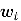
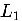
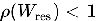

token 与时长转录器（Token-and-Duration
Transducer，TDT）——流式 ASR 解码器 RNN-T 的扩展，联合预测子词
token 及其所覆盖的声学帧数 ，以便在推理时跳过平稳段与停顿79。
1958
领域： 基础
神经网络参数化学习的起点，是弗兰克·罗森布拉特（Frank
Rosenblatt）在《Psychological Review》上发表的 «The Perceptron: A
Probabilistic Model for Information Storage and Organization in the
Brain»（№ 1\），以及 Mark I Perceptron
机器在康奈尔航空实验室的硬件实现（事先在 IBM 704
大型机上做过模拟）82。与麦卡洛克（McCulloch）和皮茨（Pitts）（1943）固定的逻辑元件不同，罗森布拉特的感知机把感觉视网膜（-单元）、随机非线性联想投影层（-单元，特征 ）与可学习的阈值求和器（-单元）区分开来，由后者给出分离超平面：
误差校正规则仅在被错误分类的对象
上更新权重

，其中 ，更新公式为 83。同在 1958 年，约翰·冯·诺伊曼（John von
Neumann）的专著 «The Computer and the Brain»（№
2）遗作出版，首次把大脑突触记忆的大规模并行、低频架构与数字计算机的串行瓶颈相对照。尽管罗森布拉特在
1958 年就已考虑过多层方案，但他缺少针对隐藏层的可微信用分配算法7。
1959
领域： 编码器 基础
1959
年，未来深度网络的三大概念支柱出现了：视觉滤波器的神经生理学层级结构、并行级联识别，以及评估函数随时间的自举（bootstrapping）。大卫·休贝尔（David
Hubel）与托尔斯滕·维泽尔（Torsten Wiesel）在《The Journal of
Physiology》上的论文（№
3\）中，于猫的纹状皮层发现了局部的方向选择性感受野，它成为卷积核的生物学原型85。同时，奥利弗·塞尔弗里奇（Oliver
Selfridge）在泰丁顿研讨会上提出了 Pandemonium 架构（№
4\）——一种由“特征魔鬼”、对其加权的“认知魔鬼”以及选取最大响应
的顶层“决策魔鬼”构成的并行层级结构87。同年，亚瑟·塞缪尔（Arthur
Samuel）在《IBM Journal of Research and
Development》上发表了关于自学习跳棋程序的著名论文（№ 5），确立了
machine
learning（机器学习）这一术语，并引入了依据当前局面与后继局面评估值之差来更新评估多项式权重的做法——这直接是时序差分方法（TD
learning）和强化学习中评论家的原型。
领域： 基础 记忆
1971 年 10 月，阿列克谢·伊瓦赫年科在 IEEE Transactions on Systems,
Man, and Cybernetics 上发表论文 «Polynomial Theory of Complex
Systems»（№ 40\）115，详细描述了按 GMDH 方法构建并训练8
层深度前馈网络的过程，并在验证集上以正则化方式选择特征7。这篇文章成为国际文献中最早被广泛引用的、实际训练深度八层架构的例子之一7。
同年，大卫·马尔（David Marr）在 Philosophical Transactions of the
Royal Society B 上发表了海马体的数学模型 «Simple Memory: A
Theory for Archicortex»（№
41\）7。马尔表明：高维空间中对输入向量的稀疏编码，加上局部 Hebb
可塑性与自适应抑制阈值，能够一次遍历就写入大量情景联想，并凭借部分线索无误地将其恢复——这一原理是现代稀疏外部记忆模块与参数化记忆模块的基础。
1972
领域： 循环 记忆
1972 年 11 月，甘利俊一在 IEEE Transactions on Computers
上发表论文 «Learning Patterns and Pattern Sequences by
Self-Organizing Nets of Threshold Elements»（№
42），比霍普菲尔德的论文早十年，推导出离散循环联想网络（甘利—霍普菲尔德网络）的稳定性方程，既适用于权重矩阵对称的静态吸引子，也适用于权重矩阵非对称的序列动态链7：
领域： 编码器 循环
1973 年，克里斯托夫·冯·德尔·马尔斯堡（Christoph von der Malsburg）在
Kybernetik 上发表论文 «Self-Organization of Orientation
Sensitive Cells in the Striate Cortex»（№
47\）115——这是对局部特征检测器竞争性自学习（competitive
learning）的首次计算机演示。他把近程皮层内兴奋、侧向抑制与 Hebb
规则结合起来，并保持每个神经元输入突触的

-范数不变（），展示了在没有教师的情况下方向柱有序图谱的自发形成。
与此同时，斯蒂芬·格罗斯伯格在 Studies in Applied Mathematics
上发表了对带乘性饱和与除法型侧向抑制的分流（shunting）循环网络的严格分析（№
48\）109：他证明，正是 S
形传递特性抑制了小幅度的背景噪声，并在输入总亮度任意增大时仍保持模式的相对对比度而不饱和——这是激活归一化层的理论基础。休·威尔逊与杰克·考恩把他们的群体动力学推广到皮层与丘脑在空间上连续的神经场（№
49\）124。
1974
领域： 基础 优化 循环
1974 年，保罗·韦尔博斯（Paul Werbos）在哈佛大学通过了博士论文
«Beyond Regression: New Tools for Prediction and Analysis in the
Behavioral Sciences»（№
50\）7。韦尔博斯提出了“动态反馈”方法——把目标函数的导数沿链式规则反向传播，穿过任意带非线性节点的多层网络的显式公式——为
1980 年代初把该方法直接应用于神经网络做了准备115。
同年，物理学家威廉·利特尔（William Little）在 Mathematical
Biosciences 上发表了论文 «The Existence of Persistent States in
the Brain»（№
51\）126，在伊辛（Ising）自旋系统的统计物理与随机循环神经网络之间建立了直接对应。他引入突触噪声的有效温度
与神经元发放的逻辑斯谛概率 ，把长期记忆描述为马尔可夫转移矩阵退化的最大本征态——这是玻尔兹曼机与热力学生成模型的基础。
领域： 基础 循环 扩散
1984 年 11 月，莱斯利·瓦利安特（Leslie Valiant）在 Communications of
the ACM 上发表了论文 «A Theory of the Learnable»（№
84\）146，为概率近似正确学习（PAC
Learning）奠定了严格的计算—统计基础：它将以置信度
领域： 循环 编码器 基础
2001 年，赫伯特·耶格尔（Herbert Jaeger）在关于回声状态网络（Echo
State Networks，ESN）的报告中提出了储备池计算的概念（№
163）：一个谱半径为

的大型固定循环储备池，把输入历史非线性地投影到高维状态
中，只用线性回归训练其上的输出读出矩阵，无需 BPTT。在 ICML 2001
会议上，约翰·拉弗蒂（John Lafferty）、安德鲁·麦卡勒姆（Andrew
McCallum）与费尔南多·佩雷拉（Fernando
Pereira）引入了条件随机场（Conditional Random
Fields，CRF）（№ 164），它对整个输出序列
的概率做全局归一化，消除了局部归一化马尔可夫模型的偏置问题。同年，哈斯蒂（Hastie）、蒂布希拉尼（Tibshirani）与弗里德曼（Friedman）的基础性统计学专著
«The Elements of Statistical Learning»（№
165）也出了第一版。
Rosenblatt, F. (1958). The perceptron: A probabilistic model for
information storage and organization in the brain. Psychological
Review, 65(6), 386–408.82
von Neumann, J. (1958). The Computer and the Brain. Yale
University Press.
Hubel, D. H., & Wiesel, T. N. (1959). Receptive fields of single
neurones in the cat's striate cortex. The Journal of
Physiology, 148(3), 574–591.86
Selfridge, O. G. (1959). Pandemonium: A paradigm for learning.
Proceedings of the Symposium on Mechanisation of Thought
Processes, HMSO, 511–529.87
Samuel, A. L. (1959). Some studies in machine learning using the
game of checkers. IBM Journal of Research and Development,
3(3), 210–229.
Widrow, B., & Hoff, M. E. (1960). Adaptive switching circuits
(ADALINE & LMS). IRE WESCON Convention Record, Part 4,
96–104.88
Kelley, H. J. (1960). Gradient theory of optimal flight paths.
ARS Journal, 30(10), 947–954.7
Steinbuch, K. (1961). Die Lernmatrix. Kybernetik, 1(1),
36–45.91
Caianiello, E. R. (1961). Outline of a theory of thought-processes
and thinking machines. Journal of Theoretical Biology, 1(2),
204–235.
Novikoff, A. B. J. (1962). On convergence proofs on perceptrons.
Proceedings of the Symposium on the Mathematical Theory of
Automata, 12, 615–622.92
Rosenblatt, F. (1962). Principles of Neurodynamics: Perceptrons
and the Theory of Brain Mechanisms. Spartan Books.
Widrow, B. (1962). Generalization and information storage in
networks of adaline "neurons" (MADALINE). Self-Organizing
Systems, Spartan Books, 435–461.
Block, H. D. (1962). The perceptron: A model for brain functioning.
I. Reviews of Modern Physics, 34(1), 123–135.94
Hubel, D. H., & Wiesel, T. N. (1962). Receptive fields,
binocular interaction and functional architecture in the cat's visual
cortex. The Journal of Physiology, 160(1), 106–154.96
Vapnik, V. N., & Lerner, A. Y. (1963). Pattern recognition using
generalized portraits. Avtomatika i Telemekhanika, 24(6),
774–780.98
Steinbuch, K., & Piske, U. A. W. (1963). Learning matrices and
their applications. IEEE Transactions on Electronic Computers,
EC-12(6), 846–862.
Dreyfus, S. E. (1962/1963). Variational problems with inequality
constraints. Journal of Mathematical Analysis and Applications,
4(2), 297–308.7
Polyak, B. T. (1964). Some methods of speeding up the convergence of
iteration methods (Heavy-Ball Momentum). USSR Computational
Mathematics and Mathematical Physics, 4(5), 1–17.100
Aizerman, M. A., Braverman, E. M., & Rozonoer, L. I. (1964).
Theoretical foundations of the potential function method in pattern
recognition learning. Automation and Remote Control, 25,
821–837.20
Wengert, R. E. (1964). A simple automatic derivative evaluation
program. Communications of the ACM, 7(8), 463–464.
Ivakhnenko, A. G., & Lapa, V. G. (1965). Cybernetic
Predicting Devices (Кибернетические предсказывающие устройства).
Наукова думка.7
Cover, T. M. (1965). Geometrical and statistical properties of
systems of linear inequalities with applications in pattern recognition.
IEEE Transactions on Electronic Computers, EC-14(3),
326–334.
Nilsson, N. J. (1965). Learning Machines: Foundations of
Trainable Pattern-Classifying Systems. McGraw-Hill.88
Ho, Y.-C., & Kashyap, R. L. (1965). An algorithm for linear
inequalities and its applications. IEEE Transactions on Electronic
Computers, EC-14(5), 683–688.
Tsypkin, Y. Z. (1966). Adaptation, training and self-organization in
automatic systems. Avtomatika i Telemekhanika, 27(1),
23–61.106
Braverman, E. M. (1966). The method of potential functions in the
problem of training machines to recognize patterns without a teacher.
Avtomatika i Telemekhanika, 27(10), 100–121.103
Fogel, L. J., Owens, A. J., & Walsh, M. J. (1966).
Artificial Intelligence through Simulated Evolution. John Wiley
& Sons.
Amari, S.-I. (1967). A theory of adaptive pattern classifiers.
IEEE Transactions on Electronic Computers, EC-16(3),
299–307.21
Cover, T., & Hart, P. (1967). Nearest neighbor pattern
classification. IEEE Transactions on Information Theory, 13(1),
21–27.
Sinkhorn, R., & Knopp, P. (1967). Concerning nonnegative
matrices and doubly stochastic matrices. Pacific Journal of
Mathematics, 21(2), 343–348.61
Ivakhnenko, A. G. (1968). The group method of data handling — a
rival of the method of stochastic approximation. Soviet Automatic
Control, 13(3), 43–55.104
Grossberg, S. (1968). Some nonlinear networks capable of learning a
spatial pattern of arbitrary complexity. PNAS, 59(2),
368–372.109
Vapnik, V. N., & Chervonenkis, A. Y. (1968). On the uniform
convergence of relative frequencies of events to their probabilities.
Doklady Akademii Nauk SSSR, 181(4), 781–783.
Minsky, M., & Papert, S. (1969). Perceptrons: An
Introduction to Computational Geometry. MIT Press.82
Bryson, A. E., & Ho, Y.-C. (1969). Applied Optimal Control:
Optimization, Estimation, and Control. Blaisdell Publishing.7
Fukushima, K. (1969). Visual feature extraction by a multilayered
network of analog threshold elements. IEEE Transactions on Systems
Science and Cybernetics, 5(4), 322–333.85
Linnainmaa, S. (1970). The representation of the cumulative
rounding error of an algorithm as a Taylor expansion of the local
rounding errors. Master's Thesis, University of Helsinki.113
Goldfarb, D. (1970). A family of variable-metric methods derived by
variational means (BFGS). Mathematics of Computation, 24(109),
23–26.
Ivakhnenko, A. G. (1970). Heuristic self-organization in problems of
engineering cybernetics. Automatica, 6(2), 207–219.115
Ivakhnenko, A. G. (1971). Polynomial theory of complex systems.
IEEE Transactions on Systems, Man, and Cybernetics, SMC-1(4),
364–378.115
Marr, D. (1971). Simple memory: A theory for archicortex.
Philosophical Transactions of the Royal Society of London B,
262(841), 23–81.7
Amari, S.-I. (1972). Learning patterns and pattern sequences by
self-organizing nets of threshold elements. IEEE Transactions on
Computers, C-21(11), 1197–1206.115
Kohonen, T. (1972). Correlation matrix memories. IEEE
Transactions on Computers, C-21(4), 353–359.118
Anderson, J. A. (1972). A simple neural network generating an
interactive memory. Mathematical Biosciences, 14(3–4),
197–220.
Nakano, K. (1972). Associatron — A model of associative memory.
IEEE Transactions on Systems, Man, and Cybernetics, SMC-2(3),
380–388.7
Wilson, H. R., & Cowan, J. D. (1972). Excitatory and inhibitory
interactions in localized populations of model neurons. Biophysical
Journal, 12(1), 1–24.119
von der Malsburg, C. (1973). Self-organization of orientation
sensitive cells in the striate cortex. Kybernetik, 14(2),
85–100.123
Grossberg, S. (1973). Contour enhancement, short term memory, and
constancies in reverberating neural networks. Studies in Applied
Mathematics, 52(3), 213–257.109
Wilson, H. R., & Cowan, J. D. (1973). A mathematical theory of
the functional dynamics of cortical and thalamic nervous tissue.
Kybernetik, 13(2), 55–80.125
Werbos, P. J. (1974). Beyond Regression: New Tools for
Prediction and Analysis in the Behavioral Sciences. PhD Thesis,
Harvard University.123
Little, W. A. (1974). The existence of persistent states in the
brain. Mathematical Biosciences, 19(1–2), 101–120.127
Fukushima, K. (1975). Cognitron: A self-organizing multilayered
neural network. Biological Cybernetics, 20(3–4),
121–136.86
Albus, J. S. (1975). A new approach to manipulator control: The
cerebellar model articulation controller (CMAC). Transactions of the
ASME, Journal of Dynamic Systems, Measurement, and Control, 97(3),
220–227.130
Sherrington, D., & Kirkpatrick, S. (1975). Solvable model of a
spin-glass. Physical Review Letters, 35(26), 1792–1796.
Holland, J. H. (1975). Adaptation in Natural and Artificial
Systems. University of Michigan Press.
Linnainmaa, S. (1976). Taylor expansion of the accumulated rounding
error. BIT Numerical Mathematics, 16(2), 146–160.23
Grossberg, S. (1976). Adaptive pattern classification and universal
recoding: I & II. Biological Cybernetics, 23, 121–134 &
187–202.89
Willshaw, D. J., & von der Malsburg, C. (1976). How patterned
neural connections can be set up by self-organization. Proceedings
of the Royal Society of London B, 194(1117), 431–445.
Anderson, J. A., Silverstein, J. W., Ritz, S. A., & Jones, R. S.
(1977). Distinctive features, categorical perception, and probability
learning: Some applications of a neural model (BSB). Psychological
Review, 84(5), 413–451.122
Amari, S.-I. (1977). Dynamics of pattern formation in
lateral-inhibition type neural fields. Biological Cybernetics,
27(2), 77–87.124
Kohonen, T. (1977). Associative Memory: A System-Theoretical
Approach. Springer-Verlag.
Dempster, A. P., Laird, N. M., & Rubin, D. B. (1977). Maximum
likelihood from incomplete data via the EM algorithm. JRSS: Series
B, 39(1), 1–38.
Little, W. A., & Shaw, G. L. (1978). Analytic study of the
memory storage capacity of a neural network. Mathematical
Biosciences, 39(3–4), 281–290.127
Schwarz, G. (1978). Estimating the dimension of a model. The
Annals of Statistics, 6(2), 461–464.
Grossberg, S. (1978). A theory of human memory: Self-organization
and performance of sensory-motor codes, maps, and plans. Progress in
Theoretical Biology, 5, 233–374.
Fukushima, K. (1979). Improved Cognitron with r.m.s.-type synapses.
Biological Cybernetics, 32, 97–108.129
Fukushima, K. (1979). Neural network model for a mechanism of
pattern recognition unaffected by shift in position — Neocognitron (in
Japanese). Transactions of the IECE of Japan, J62-A(10),
658–665.86
Cooper, L. N., Liberman, F., & Oja, E. (1979). A theory for the
acquisition and loss of neuron specificity in visual cortex.
Biological Cybernetics, 33(1), 9–28.
Fukushima, K. (1980). Neocognitron: A self-organizing neural network
model for a mechanism of pattern recognition unaffected by shift in
position. Biological Cybernetics, 36(4), 193–202.129
Grossberg, S. (1980). How does a brain build a cognitive code?
Psychological Review, 87(1), 1–51.
Baur, W., & Strassen, V. (1983/1980). The complexity of partial
derivatives. Theoretical Computer Science, 22(3),
317–330.114
Hinton, G. E., & Anderson, J. A. (Eds.). (1981). Parallel
Models of Associative Memory. Lawrence Erlbaum Associates.
McClelland, J. L., & Rumelhart, D. E. (1981). An interactive
activation model of context effects in letter perception: Part 1.
Psychological Review, 88(5), 375–407.
Barto, A. G., Sutton, R. S., & Brouwer, P. S. (1981).
Associative search network: A reinforcement learning associative memory.
Biological Cybernetics, 40(3), 201–211.
Hopfield, J. J. (1982). Neural networks and physical systems with
emergent collective computational abilities. PNAS, 79(8),
2554–2558.124
Werbos, P. J. (1982). Applications of advances in nonlinear
sensitivity analysis. System Modeling and Optimization (IFIP),
Springer, 762–770.7
Kohonen, T. (1982). Self-organized formation of topologically
correct feature maps. Biological Cybernetics, 43(1),
59–69.
Oja, E. (1982). Simplified neuron model as a principal component
analyzer. Journal of Mathematical Biology, 15(3), 267–273.
Bienenstock, E. L., Cooper, L. N., & Munro, P. W. (1982). Theory
for the development of neuron selectivity: Orientation specificity and
binocular interaction in visual cortex. Journal of
Neuroscience, 2(1), 32–48.
Marr, D. (1982). Vision: A Computational Investigation into the
Human Representation and Processing of Visual Information. W. H.
Freeman.
Nesterov, Y. E. (1983). A method for solving the convex programming
problem with convergence rate .
Doklady Akademii Nauk SSSR, 269(3), 543–547 (Soviet Math.
Dokl., 27(2), 372–376).143
Kirkpatrick, S., Gelatt, C. D., & Vecchi, M. P. (1983).
Optimization by simulated annealing. Science, 220(4598),
671–680.144
Barto, A. G., Sutton, R. S., & Anderson, C. W. (1983).
Neuronlike adaptive elements that can solve difficult learning control
problems. IEEE TSMC, SMC-13(5), 834–846.
Valiant, L. G. (1984). A theory of the learnable. Communications
of the ACM, 27(11), 1134–1142.147
Hopfield, J. J. (1984). Neurons with graded response have collective
computational properties like those of two-state neurons. PNAS,
81(10), 3088–3092.
Geman, S., & Geman, D. (1984). Stochastic relaxation, Gibbs
distributions, and the Bayesian restoration of images. IEEE
TPAMI, 6(6), 721–741.
Kohonen, T. (1984). Self-Organization and Associative
Memory. Springer-Verlag.
Ackley, D. H., Hinton, G. E., & Sejnowski, T. J. (1985). A
learning algorithm for Boltzmann machines. Cognitive Science,
9(1), 147–169.149
LeCun, Y. (1985). Une procédure d'apprentissage pour réseau à seuil
asymétrique. Proceedings of Cognitiva 85, 599–604.
Parker, D. B. (1985). Learning-Logic. Technical Report
TR-47, Center for Computational Research in Economics and Management
Science, MIT.
Rumelhart, D. E., & Zipser, D. (1985). Feature discovery by
competitive learning. Cognitive Science, 9(1), 75–112.
Rumelhart, D. E., Hinton, G. E., & Williams, R. J. (1986).
Learning representations by back-propagating errors. Nature,
323(6088), 533–536.115
Rumelhart, D. E., McClelland, J. L., & the PDP Research Group.
(1986). Parallel Distributed Processing: Explorations in the
Microstructure of Cognition (Vols. 1 & 2). MIT Press.150
Smolensky, P. (1986). Information processing in dynamical systems:
Foundations of harmony theory. In Parallel Distributed
Processing (Vol. 1, pp. 194–281). MIT Press.
Jordan, M. I. (1986). Attractor dynamics and parallelism in a
connectionist sequential machine. Proceedings of the 8th Annual
Conference of the Cognitive Science Society, 531–546.
Sejnowski, T. J., & Rosenberg, C. R. (1987/1986). Parallel
networks that learn to pronounce English text (NETtalk). Complex
Systems, 1(1), 145–168.
Waibel, A., Hanazawa, T., Hinton, G., Shikano, K., & Lang, K. J.
(1989/1987). Phoneme recognition using time-delay neural networks
(TDNN). IEEE TASSP, 37(3), 328–339 (ATR TR-I-0006,
1987).87
Hinton, G. E., & Plaut, D. C. (1987). Using fast weights to
deblur old memories. Proceedings of the 9th Annual Conference of the
Cognitive Science Society, 177–186.45
Ballard, D. H. (1987). Modular learning in neural networks.
Proceedings of AAAI-87, 279–284.
Carpenter, G. A., & Grossberg, S. (1987). A massively parallel
architecture for a self-organizing neural pattern recognition machine
(ART 1). Computer Vision, Graphics, and Image Processing,
37(1), 54–115.
Pineda, F. J. (1987). Generalization of back-propagation to
recurrent neural networks. Physical Review Letters, 59(19),
2229–2232.
Zhang, W., Tanida, J., Itoh, K., & Ichioka, Y. (1988).
Shift-invariant pattern recognition neural network and its optical
architecture. Proceedings of Annual Conference of the Japan Society
of Applied Physics, 2147–2151.20
Broomhead, D. S., & Lowe, D. (1988). Multivariable functional
interpolation and adaptive networks (RBF). Complex Systems, 2,
321–355.
Sutton, R. S. (1988). Learning to predict by the methods of temporal
differences. Machine Learning, 3(1), 9–44.
Bourlard, H., & Kamp, Y. (1988). Auto-association by multilayer
perceptrons and singular value decomposition. Biological
Cybernetics, 59(4–5), 291–294.
Kosko, B. (1988). Bidirectional associative memories. IEEE
TSMC, 18(1), 49–60.
LeCun, Y., Boser, B., Denker, J. S., Henderson, D., Howard, R. E.,
Hubbard, W., & Jackel, L. D. (1989). Backpropagation applied to
handwritten zip code recognition. Neural Computation, 1(4),
541–551.96
Cybenko, G. (1989). Approximation by superpositions of a sigmoidal
function. Mathematics of Control, Signals, and Systems, 2(4),
303–314.
Hornik, K., Stinchcombe, M., & White, H. (1989). Multilayer
feedforward networks are universal approximators. Neural
Networks, 2(5), 359–366.
Williams, R. J., & Zipser, D. (1989). A learning algorithm for
continually running fully recurrent neural networks (RTRL). Neural
Computation, 1(2), 270–280.
Watkins, C. J. C. H. (1989). Learning from Delayed Rewards.
PhD Thesis, King's College, University of Cambridge.
Liu, D. C., & Nocedal, J. (1989). On the limited memory BFGS
method for large scale optimization. Mathematical Programming,
45(1–3), 503–528.153
Bridle, J. S. (1990/1989). Probabilistic interpretation of
feedforward classification network outputs, with relationships to
statistical pattern recognition (Softmax). Neurocomputing,
Springer, 227–236.
Elman, J. L. (1990). Finding structure in time. Cognitive
Science, 14(2), 179–211.154
Werbos, P. J. (1990). Backpropagation through time: What it does and
how to do it. Proceedings of the IEEE, 78(10), 1550–1560.
LeCun, Y., Denker, J. S., & Solla, S. A. (1990). Optimal brain
damage. NeurIPS, 2, 598–605.
Schmidhuber, J. (1990). Making the world differentiable: On using
self-supervised fully recurrent neural networks for dynamic
reinforcement learning and planning in non-stationary environments.
Technical Report FKI-126-90, TU Munich.7
Hansen, L. K., & Salamon, P. (1990). Neural network ensembles.
IEEE TPAMI, 12(10), 993–1001.
Jacobs, R. A., Jordan, M. I., Nowlan, S. J., & Hinton, G. E.
(1991). Adaptive mixtures of local experts. Neural Computation,
3(1), 79–87.156
Hochreiter, S. (1991). Untersuchungen zu dynamischen neuronalen
Netzen. Diploma Thesis, Institut für Informatik, Technische
Universität München.7
Schmidhuber, J. (1992/1991). Learning to control fast-weight
memories: An alternative to dynamic recurrent networks. Neural
Computation, 4(1), 131–139 (TR FKI-147-91, March 1991).22
Kramer, M. A. (1991). Nonlinear principal component analysis using
autoassociative neural networks. AIChE Journal, 37(2),
233–243.
Hertz, J., Krogh, A., & Palmer, R. G. (1991). Introduction
to the Theory of Neural Computation. Addison-Wesley.
Williams, R. J. (1992). Simple statistical gradient-following
algorithms for connectionist reinforcement learning (REINFORCE).
Machine Learning, 8(3–4), 229–256.
Schmidhuber, J. (1992). Learning complex, extended sequences using
the principle of history compression. Neural Computation, 4(2),
234–242.22
Polyak, B. T., & Juditsky, A. B. (1992). Acceleration of
stochastic approximation by averaging. SIAM Journal on Control and
Optimization, 30(4), 838–855.
Krogh, A., & Hertz, J. A. (1992). A simple weight decay can
improve generalization. NeurIPS, 4, 950–957.
Boser, B. E., Guyon, I. M., & Vapnik, V. N. (1992). A training
algorithm for optimal margin classifiers. Proceedings of COLT,
144–152.
Bromley, J., Guyon, I., LeCun, Y., Säckinger, E., & Shah, R.
(1993). Signature verification using a "Siamese" time delay neural
network. NeurIPS, 6, 737–744.
Hinton, G. E., & van Camp, D. (1993). Keeping the neural
networks simple by minimizing the description length of the weights.
Proceedings of COLT, 5–13.
Barron, A. R. (1993). Universal approximation bounds for
superpositions of a sigmoidal function. IEEE Transactions on
Information Theory, 39(3), 930–945.
Hassibi, B., & Stork, D. G. (1993). Second order derivatives for
network pruning: Optimal Brain Surgeon. NeurIPS, 5,
164–171.
Bengio, Y., Simard, P., & Frasconi, P. (1994). Learning
long-term dependencies with gradient descent is difficult. IEEE
Transactions on Neural Networks, 5(2), 157–166.
Jordan, M. I., & Jacobs, R. A. (1994). Hierarchical mixtures of
experts and the EM algorithm. Neural Computation, 6(2),
181–214.
Pearlmutter, B. A. (1994). Fast exact multiplication by the Hessian.
Neural Computation, 6(1), 147–160.
Haykin, S. (1994). Neural Networks: A Comprehensive
Foundation. Macmillan / Prentice Hall.
Hinton, G. E., Dayan, P., Frey, B. J., & Neal, R. M. (1995). The
"wake-sleep" algorithm for unsupervised neural networks.
Science, 268(5214), 1158–1161.
Bell, A. J., & Sejnowski, T. J. (1995). An
information-maximization approach to blind separation and blind
deconvolution. Neural Computation, 7(6), 1129–1159.
LeCun, Y., & Bengio, Y. (1995). Convolutional networks for
images, speech, and time series. In The Handbook of Brain Theory and
Neural Networks (pp. 255–258). MIT Press.
Bishop, C. M. (1995). Neural Networks for Pattern
Recognition. Oxford University Press.88
Olshausen, B. A., & Field, D. J. (1996). Emergence of
simple-cell receptive field properties by learning a sparse code for
natural images. Nature, 381(6583), 607–609.
Neal, R. M. (1996). Bayesian Learning for Neural Networks.
Lecture Notes in Statistics, Vol. 118, Springer.
Goller, C., & Küchler, A. (1996). Learning task-dependent
distributed representations by backpropagation through structure.
Proceedings of IEEE ICNN, 1, 347–352.
Ripley, B. D. (1996). Pattern Recognition and Neural
Networks. Cambridge University Press.
Hochreiter, S., & Schmidhuber, J. (1997). Long short-term
memory. Neural Computation, 9(8), 1735–1780.155
Schuster, M., & Paliwal, K. K. (1997). Bidirectional recurrent
neural networks. IEEE Transactions on Signal Processing,
45(11), 2673–2681.
Freund, Y., & Schapire, R. E. (1997). A decision-theoretic
generalization of on-line learning and an application to boosting
(AdaBoost). Journal of Computer and System Sciences, 55(1),
119–139.
LeCun, Y., Bottou, L., Bengio, Y., & Haffner, P. (1998).
Gradient-based learning applied to document recognition (LeNet-5).
Proceedings of the IEEE, 86(11), 2278–2324.
LeCun, Y., Bottou, L., Orr, G. B., & Müller, K.-R. (1998).
Efficient BackProp. In Neural Networks: Tricks of the Trade
(pp. 9–50). Springer.
Amari, S.-I. (1998). Natural gradient works efficiently in learning.
Neural Computation, 10(2), 251–276.159
Sutton, R. S., & Barto, A. G. (1998/2018). Reinforcement
Learning: An Introduction. MIT Press.152
Vapnik, V. N. (1998). Statistical Learning Theory. John
Wiley & Sons.99
Gers, F. A., Schmidhuber, J., & Cummins, F. (1999). Learning to
forget: Continual prediction with LSTM. Proceedings of ICANN,
2, 850–855.155
Lee, D. D., & Seung, H. S. (1999). Learning the parts of objects
by non-negative matrix factorization. Nature, 401(6755),
788–791.
Qian, N. (1999). On the momentum term in gradient descent learning
algorithms. Neural Networks, 12(1), 145–151.
Gers, F. A., Schmidhuber, J., & Cummins, F. (2000). Learning to
forget: Continual prediction with LSTM. Neural Computation,
12(10), 2451–2471.
Gers, F. A., & Schmidhuber, J. (2000). Recurrent nets that time
and count (Peephole LSTM). Proceedings of IEEE IJCNN, 3,
189–194.
Tenenbaum, J. B., de Silva, V., & Langford, J. C. (2000). A
global geometric framework for nonlinear dimensionality reduction
(Isomap). Science, 290(5500), 2319–2323.
Roweis, S. T., & Saul, L. K. (2000). Nonlinear dimensionality
reduction by locally linear embedding (LLE). Science,
290(5500), 2323–2326.
Jaeger, H. (2001). The "echo state" approach to analysing and
training recurrent neural networks. GMD Report 148, German National
Research Center for Information Technology.
Lafferty, J., McCallum, A., & Pereira, F. C. N. (2001).
Conditional random fields: Probabilistic models for segmenting and
labeling sequence data. ICML, 282–289.
Hastie, T., Tibshirani, R., & Friedman, J. (2001). The
Elements of Statistical Learning: Data Mining, Inference, and
Prediction. Springer.
Hinton, G. E. (2002). Training products of experts by minimizing
contrastive divergence. Neural Computation, 14(8),
1771–1800.142
Maass, W., Natschläger, T., & Markram, H. (2002). Real-time
computing without stable states: A new framework for neural computation
based on perturbations (LSM). Neural Computation, 14(11),
2531–2560.
Collins, M. (2002). Discriminative training methods for hidden
Markov models: Theory and experiments with perceptron algorithms.
EMNLP, 1–8.
Collobert, R., Bengio, S., & Mariéthoz, J. (2002). Torch: A
modular machine learning software library. Technical Report
IDIAP-RR 02-46.
Bengio, Y., Ducharme, R., Vincent, P., & Jauvin, C. (2003). A
neural probabilistic language model. Journal of Machine Learning
Research, 3, 1137–1155.
Simard, P. Y., Steinkraus, D., & Platt, J. C. (2003). Best
practices for convolutional neural networks applied to visual document
analysis. ICDAR, 958–963.
MacKay, D. J. C. (2003). Information Theory, Inference, and
Learning Algorithms. Cambridge University Press.
Oh, K.-S., & Jung, K. (2004). GPU implementation of neural
networks. Pattern Recognition, 37(6), 1311–1314.
Ng, A. Y. (2004). Feature selection, vs.
regularization, and rotational invariance. ICML, 78.
Welling, M., Rosen-Zvi, M., & Hinton, G. E. (2004). Exponential
family harmoniums with an application to information retrieval.
NeurIPS, 17, 1481–1488.163
Hyvärinen, A. (2005). Estimation of non-normalized statistical
models by score matching. Journal of Machine Learning Research,
6, 695–709.163
Graves, A., & Schmidhuber, J. (2005). Framewise phoneme
classification with bidirectional LSTM and other neural network
architectures. Neural Networks, 18(5–6), 602–610.
Chopra, S., Hadsell, R., & LeCun, Y. (2005). Learning a
similarity metric discriminatively, with application to face
verification. CVPR, 1, 539–546.
Gori, M., Monfardini, G., & Scarselli, F. (2005). A new model
for learning in graph domains. IEEE IJCNN, 2, 729–734.
Morin, F., & Bengio, Y. (2005). Hierarchical probabilistic
neural network language model. AISTATS, 246–252.
Graves, A., Fernández, S., Gomez, F., & Schmidhuber, J. (2006).
Connectionist temporal classification: Labelling unsegmented sequence
data with recurrent neural networks (CTC). ICML, 369–376.
Hinton, G. E., Osindero, S., & Teh, Y.-W. (2006). A fast
learning algorithm for deep belief nets. Neural Computation,
18(7), 1527–1554.142
Hinton, G. E., & Salakhutdinov, R. R. (2006). Reducing the
dimensionality of data with neural networks. Science,
313(5786), 504–507.
LeCun, Y., Chopra, S., Hadsell, R., Ranzato, M., & Huang, F. J.
(2006). A tutorial on energy-based learning. Predicting Structured
Data, MIT Press, 1–59.
Bishop, C. M. (2006). Pattern Recognition and Machine
Learning. Springer.164
Bengio, Y., Lamblin, P., Popovici, D., & Larochelle, H. (2007).
Greedy layer-wise training of deep networks. NeurIPS, 19,
153–160.163
Bottou, L., & Bousquet, O. (2007). The tradeoffs of large scale
learning. NeurIPS, 20, 161–168.
Mnih, A., & Hinton, G. (2007). Three new graphical models for
statistical language modelling. ICML, 641–648.
Salakhutdinov, R., Mnih, A., & Hinton, G. (2007). Restricted
Boltzmann machines for collaborative filtering. ICML,
791–798.
Vincent, P., Larochelle, H., Bengio, Y., & Manzagol, P.-A.
(2008). Extracting and composing robust features with denoising
autoencoders. ICML, 1096–1103.161
Collobert, R., & Weston, J. (2008). A unified architecture for
natural language processing: Deep neural networks with multitask
learning. ICML, 160–167.
van der Maaten, L., & Hinton, G. (2008). Visualizing data using
t-SNE. Journal of Machine Learning Research, 9, 2579–2605.
Deng, J., Dong, W., Socher, R., Li, L.-J., Li, K., & Fei-Fei, L.
(2009). ImageNet: A large-scale hierarchical image database.
CVPR, 248–255.
Raina, R., Madhavan, A., & Ng, A. Y. (2009). Large-scale deep
unsupervised learning using graphics processors. ICML,
873–880.
Bengio, Y., Louradour, J., Collobert, R., & Weston, J. (2009).
Curriculum learning. ICML, 41–48.
Salakhutdinov, R., & Hinton, G. E. (2009). Deep Boltzmann
machines. AISTATS, 448–455.
Scarselli, F., Gori, M., Tsoi, A. C., Hagenbuchner, M., &
Monfardini, G. (2009). The graph neural network model. IEEE
Transactions on Neural Networks, 20(1), 61–80.
Glorot, X., & Bengio, Y. (2010). Understanding the difficulty of
training deep feedforward neural networks (Xavier Init).
AISTATS, 249–256.
Nair, V., & Hinton, G. E. (2010). Rectified linear units improve
restricted Boltzmann machines (ReLU). ICML, 807–814.
Mikolov, T., Karafiát, M., Burget, L., Černocký, J., &
Khudanpur, S. (2010). Recurrent neural network based language model.
Interspeech, 1045–1048.
Gutmann, M., & Hyvärinen, A. (2010). Noise-contrastive
estimation: A new estimation principle for unnormalized statistical
models (NCE). AISTATS, 297–304.
Martens, J. (2010). Deep learning via Hessian-free optimization.
ICML, 735–742.
Bergstra, J., Breuleux, O., Bastien, F., Lamblin, P., Pascanu, R.,
Desjardins, G., Turian, J., Warde-Farley, D., & Bengio, Y. (2010).
Theano: A CPU and GPU math compiler in Python. SciPy,
3–10.
Duchi, J., Hazan, E., & Singer, Y. (2011). Adaptive subgradient
methods for online learning and stochastic optimization (AdaGrad).
Journal of Machine Learning Research, 12, 2121–2159.168
Vincent, P. (2011). A connection between score matching and
denoising autoencoders (DSM). Neural Computation, 23(7),
1661–1674.161
Glorot, X., Bordes, A., & Bengio, Y. (2011). Deep sparse
rectifier neural networks. AISTATS, 315–323.
Welling, M., & Teh, Y. W. (2011). Bayesian learning via
stochastic gradient Langevin dynamics (SGLD). ICML,
681–688.
Seide, F., Li, G., & Yu, D. (2011). Conversational speech
transcription using context-dependent deep neural networks.
Interspeech, 437–440.
Collobert, R., Weston, J., Bottou, L., Karlen, M., Kavukcuoglu, K.,
& Kuksa, P. (2011). Natural language processing (almost) from
scratch. JMLR, 12, 2493–2537.
Krizhevsky, A., Sutskever, I., & Hinton, G. E. (2012). ImageNet
classification with deep convolutional neural networks (AlexNet).
NeurIPS, 25, 1097–1105.96
Graves, A. (2012). Sequence transduction with recurrent neural
networks (RNN-T). arXiv preprint arXiv:1211.3711.
Hinton, G. E., Srivastava, N., Krizhevsky, A., Sutskever, I., &
Salakhutdinov, R. R. (2012). Improving neural networks by preventing
co-adaptation of feature detectors (Dropout). arXiv:1207.0580
(JMLR 2014).
Zeiler, M. D. (2012). ADADELTA: An adaptive learning rate method.
arXiv preprint arXiv:1212.5701.
Dean, J., Corrado, G., Monga, R., Chen, K., Devin, M., Mao, M., ...
& Ng, A. Y. (2012). Large scale distributed deep networks
(DistBelief). NeurIPS, 25, 1223–1231.
Cireşan, D., Meier, U., & Schmidhuber, J. (2012). Multi-column
deep neural networks for image classification. CVPR,
3642–3649.155
Bergstra, J., & Bengio, Y. (2012). Random search for
hyper-parameter optimization. JMLR, 13, 281–305.
Kingma, D. P., & Welling, M. (2013). Auto-encoding variational
Bayes (VAE). arXiv preprint arXiv:1312.6114 (ICLR 2014).
Rezende, D. J., Mohamed, S., & Wierstra, D. (2014/2013).
Stochastic backpropagation and approximate inference in deep generative
models. ICML, 1278–1286.
Mikolov, T., Sutskever, I., Chen, K., Corrado, G. S., & Dean, J.
(2013). Distributed representations of words and phrases and their
compositionality (Word2Vec). NeurIPS, 26, 3111–3119.
Lin, M., Chen, Q., & Yan, S. (2013). Network in network.
arXiv preprint arXiv:1312.4400.
Goodfellow, I. J., Warde-Farley, D., Mirza, M., Courville, A., &
Bengio, Y. (2013). Maxout networks. ICML, 1319–1327.
Mnih, V., Kavukcuoglu, K., Silver, D., Graves, A., Antonoglou, I.,
Wierstra, D., & Riedmiller, M. (2013/2015). Playing Atari with deep
reinforcement learning (DQN). arXiv:1312.5602 (Nature
2015).
Saxe, A. M., McClelland, J. L., & Ganguli, S. (2013). Exact
solutions to the nonlinear dynamics of learning in deep linear neural
networks. arXiv:1312.6120 (ICLR 2014).
Johnson, R., & Zhang, T. (2013). Accelerating stochastic
gradient descent using predictive variance reduction (SVRG).
NeurIPS, 26, 315–323.
Sutskever, I., Vinyals, O., & Le, Q. V. (2014). Sequence to
sequence learning with neural networks. NeurIPS, 27,
3104–3112.
Bahdanau, D., Cho, K., & Bengio, Y. (2014). Neural machine
translation by jointly learning to align and translate. arXiv
preprint arXiv:1409.0473 (ICLR 2015).
Cho, K., van Merriënboer, B., Gulcehre, C., Bahdanau, D., Bougares,
F., Schwenk, H., & Bengio, Y. (2014). Learning phrase
representations using RNN encoder-decoder for statistical machine
translation (GRU). EMNLP, 1724–1734.
Graves, A., Wayne, G., & Danihelka, I. (2014). Neural Turing
machines. arXiv preprint arXiv:1410.5401.
Goodfellow, I., Pouget-Abadie, J., Mirza, M., Xu, B., Warde-Farley,
D., Ozair, S., Courville, A., & Bengio, Y. (2014). Generative
adversarial nets (GAN). NeurIPS, 27, 2672–2680.
Kingma, D. P., & Ba, J. (2014). Adam: A method for stochastic
optimization. arXiv preprint arXiv:1412.6980 (ICLR 2015).
Simonyan, K., & Zisserman, A. (2014). Very deep convolutional
networks for large-scale image recognition (VGG). arXiv preprint
arXiv:1409.1556.176
Szegedy, C., Liu, W., Jia, Y., Sermanet, P., Reed, S., Anguelov, D.,
... & Rabinovich, A. (2015/2014). Going deeper with convolutions
(GoogLeNet). CVPR, 1–9 (arXiv:1409.4842).
Pennington, J., Socher, R., & Manning, C. D. (2014). GloVe:
Global vectors for word representation. EMNLP, 1532–1543.
Goodfellow, I. J., Shlens, J., & Szegedy, C. (2014). Explaining
and harnessing adversarial examples. arXiv preprint
arXiv:1412.6572 (ICLR 2015).
Jia, Y., Shelhamer, E., Donahue, J., Karayev, S., Long, J.,
Girshick, R., Guadarrama, S., & Darrell, T. (2014). Caffe:
Convolutional architecture for fast feature embedding. ACM
Multimedia, 675–678.
Srivastava, R. K., Greff, K., & Schmidhuber, J. (2015). Highway
networks. arXiv preprint arXiv:1505.00387.
He, K., Zhang, X., Ren, S., & Sun, J. (2016/2015). Deep residual
learning for image recognition (ResNet). CVPR, 770–778
(arXiv:1512.03385).61
He, K., Zhang, X., Ren, S., & Sun, J. (2015). Delving deep into
rectifiers: Surpassing human-level performance on ImageNet
classification (Kaiming Init). ICCV, 1026–1034.
Ioffe, S., & Szegedy, C. (2015). Batch normalization:
Accelerating deep network training by reducing internal covariate shift.
ICML, 448–456.178
Ronneberger, O., Fischer, P., & Brox, T. (2015). U-Net:
Convolutional networks for biomedical image segmentation.
MICCAI, Springer, 234–241.179
Sohl-Dickstein, J., Weiss, E., Maheswaranathan, N., & Ganguli,
S. (2015). Deep unsupervised learning using nonequilibrium
thermodynamics. ICML, 2256–2265.
Hinton, G., Vinyals, O., & Dean, J. (2015). Distilling the
knowledge in a neural network. arXiv preprint
arXiv:1503.02531.
Martens, J., & Grosse, R. (2015). Optimizing neural networks
with Kronecker-factored approximate curvature (K-FAC). ICML,
2408–2417.
Luong, M.-T., Pham, H., & Manning, C. D. (2015). Effective
approaches to attention-based neural machine translation.
EMNLP, 1412–1421.
Chan, W., Jaitly, N., Le, Q., & Vinyals, O. (2016/2015). Listen,
attend and spell (LAS). ICASSP, 4960–4964
(arXiv:1508.01211).
Amodei, D., Ananthanarayanan, S., Anubhai, R., Bai, J., Battenberg,
E., Case, C., ... & Zhu, Z. (2016/2015). Deep Speech 2: End-to-end
speech recognition in English and Mandarin. ICML, 173–182
(arXiv:1512.02595).
Sennrich, R., Haddow, B., & Birch, A. (2016/2015). Neural
machine translation of rare words with subword units (BPE).
ACL, 1715–1725 (arXiv:1508.07909).
Abadi, M., Barham, P., Chen, J., Chen, Z., Davis, A., Dean, J., ...
& Zheng, X. (2016/2015). TensorFlow: A system for large-scale
machine learning. OSDI, 265–283
(github.com/tensorflow/tensorflow).
Ba, J. L., Kiros, J. R., & Hinton, G. E. (2016). Layer
normalization. arXiv preprint arXiv:1607.06450.
He, K., Zhang, X., Ren, S., & Sun, J. (2016). Identity mappings
in deep residual networks (Pre-LN ResNet). ECCV,
630–645.61
Graves, A. (2016). Adaptive computation time for recurrent neural
networks (ACT). arXiv preprint arXiv:1603.08983.41
Hendrycks, D., & Gimpel, K. (2016). Gaussian error linear units
(GELUs). arXiv preprint arXiv:1606.08415.
van den Oord, A., Dieleman, S., Zen, H., Simonyan, K., Vinyals, O.,
Graves, A., Kalchbrenner, N., Senior, A., & Kavukcuoglu, K. (2016).
WaveNet: A generative model for raw audio.
arXiv:1609.03499.
Dinh, L., Sohl-Dickstein, J., & Bengio, S. (2016). Density
estimation using Real NVP. arXiv preprint arXiv:1605.08803
(ICLR 2017).
Jang, E., Gu, S., & Poole, B. (2016). Categorical
reparameterization with Gumbel-Softmax. arXiv preprint
arXiv:1611.01144 (ICLR 2017).54
Kipf, T. N., & Welling, M. (2016). Semi-supervised
classification with graph convolutional networks (GCN). arXiv
preprint arXiv:1609.02907 (ICLR 2017).
Huang, G., Liu, Z., Van Der Maaten, L., & Weinberger, K. Q.
(2017/2016). Densely connected convolutional networks (DenseNet).
CVPR, 4700–4708 (arXiv:1608.06993).180
Loshchilov, I., & Hutter, F. (2016). SGDR: Stochastic gradient
descent with warm restarts (Cosine Annealing). arXiv:1608.03983
(ICLR 2017).
Goodfellow, I., Bengio, Y., & Courville, A. (2016). Deep
Learning. MIT Press.8
Vaswani, A., Shazeer, N., Parmar, N., Uszkoreit, J., Jones, L.,
Gomez, A. N., Kaiser, Ł., & Polosukhin, I. (2017). Attention is all
you need. NeurIPS, 30, 5998–6008.182
Shazeer, N., Mirhoseini, A., Maziarz, K., Davis, A., Le, Q., Hinton,
G., & Dean, J. (2017). Outrageously large neural networks: The
sparsely-gated mixture-of-experts layer. ICLR
(arXiv:1701.06538).184
van den Oord, A., Vinyals, O., & Kavukcuoglu, K. (2017). Neural
discrete representation learning (VQ-VAE). NeurIPS, 30,
6306–6315.
Wang, Y., Skerry-Ryan, R., Stanton, D., Wu, Y., Weiss, R. J.,
Jaitly, N., ... & Saurous, R. A. (2017). Tacotron: Towards
end-to-end speech synthesis. Interspeech, 4006–4010.
Shen, J., Pang, R., Weiss, R. J., Schuster, M., Jaitly, N., Yang,
Z., ... & Wu, Y. (2018/2017). Natural TTS synthesis by conditioning
WaveNet on mel spectrogram predictions (Tacotron 2). ICASSP,
4779–4783 (arXiv:1712.05884).
Loshchilov, I., & Hutter, F. (2017). Decoupled weight decay
regularization (AdamW). arXiv preprint arXiv:1711.05101 (ICLR
2019).
Schulman, J., Wolski, F., Dhariwal, P., Radford, A., & Klimov,
O. (2017). Proximal policy optimization algorithms (PPO). arXiv
preprint arXiv:1707.06347.158
Arjovsky, M., Chintala, S., & Bottou, L. (2017). Wasserstein
generative adversarial networks (WGAN). ICML, 214–223.
Howard, A. G., Zhu, M., Chen, B., Kalenichenko, D., Wang, W.,
Weyand, T., Andreetto, M., & Adam, H. (2017). MobileNets: Efficient
convolutional neural networks for mobile vision applications.
arXiv:1704.04861.
Ramachandran, P., Zoph, B., & Le, Q. V. (2017). Searching for
activation functions (Swish). arXiv preprint
arXiv:1710.05941.
Veličković, P., Cucurull, G., Casanova, A., Romero, A., Liò, P.,
& Bengio, Y. (2017). Graph attention networks (GAT).
arXiv:1710.10903 (ICLR 2018).
Peters, M. E., Neumann, M., Iyyer, M., Gardner, M., Clark, C., Lee,
K., & Zettlemoyer, L. (2018). Deep contextualized word
representations (ELMo). NAACL-HLT, 2227–2237.
Radford, A., Narasimhan, K., Salimans, T., & Sutskever, I.
(2018). Improving language understanding by generative pre-training
(GPT-1). OpenAI Technical Report.
Devlin, J., Chang, M.-W., Lee, K., & Toutanova, K. (2019/2018).
BERT: Pre-training of deep bidirectional transformers for language
understanding. NAACL-HLT, 4171–4186 (arXiv:1810.04805).186
Chen, R. T. Q., Rubanova, Y., Bettencourt, J., & Duvenaud, D. K.
(2018). Neural ordinary differential equations. NeurIPS, 31,
6571–6583.
van den Oord, A., Li, Y., & Vinyals, O. (2018). Representation
learning with contrastive predictive coding (CPC / InfoNCE). arXiv
preprint arXiv:1807.03748.191
Kingma, D. P., & Dhariwal, P. (2018). Glow: Generative flow with
invertible 1x1 convolutions. NeurIPS, 31, 10215–10224.
Prenger, R., Valle, R., & Catanzaro, B. (2019/2018). WaveGlow: A
flow-based generative network for speech synthesis. ICASSP,
3617–3621 (arXiv:1811.00002).
Wu, Y., & He, K. (2018). Group normalization. ECCV,
3–19.
Shazeer, N., & Stern, M. (2018). Adafactor: Adaptive learning
rates with sublinear memory cost. ICML, 4596–4604.192
Jacot, A., Gabriel, F., & Hongler, C. (2018). Neural tangent
kernel: Convergence and generalization in neural networks.
NeurIPS, 31, 8571–8580.
Kudo, T., & Richardson, J. (2018). SentencePiece: A simple and
language independent subword tokenizer and detokenizer for neural text
processing. EMNLP Demo, 66–71
(github.com/google/sentencepiece).193
Radford, A., Wu, J., Child, R., Luan, D., Amodei, D., &
Sutskever, I. (2019). Language models are unsupervised multitask
learners (GPT-2). OpenAI Blog, 1(8), 9.194
Zhang, B., & Sennrich, R. (2019). Root mean square layer
normalization (RMSNorm). NeurIPS, 32, 12360–12371.73
Shazeer, N. (2019). Fast transformer decoding: One write-head is all
you need (MQA). arXiv preprint arXiv:1911.02150.156
Bai, S., Kolter, J. Z., & Koltun, V. (2019). Deep equilibrium
models (DEQ). NeurIPS, 32, 690–701.
Lan, Z., Chen, M., Goodman, S., Gimpel, K., Sharma, P., &
Soricut, R. (2019). ALBERT: A lite BERT for self-supervised learning of
language representations. arXiv:1909.11942 (ICLR 2020).189
Raffel, C., Shazeer, N., Roberts, A., Lee, K., Narang, S., Matena,
M., Zhou, Y., Li, W., & Liu, P. J. (2020/2019). Exploring the limits
of transfer learning with a unified text-to-text transformer (T5).
JMLR, 21(140), 1–67 (arXiv:1910.10683).72
Dai, Z., Yang, Z., Yang, Y., Carbonell, J., Le, Q. V., &
Salakhutdinov, R. (2019). Transformer-XL: Attentive language models
beyond a fixed-length context. ACL, 2978–2988.190
Ren, Y., Ruan, Y., Tan, X., Qin, T., Zhao, S., Zhao, Z., & Liu,
T.-Y. (2019). FastSpeech: Fast, robust and controllable text to speech.
NeurIPS, 32, 3171–3180.
Song, Y., & Ermon, S. (2019). Generative modeling by estimating
gradients of the data distribution (NCSN). NeurIPS, 32,
11895–11907.
Tan, M., & Le, Q. (2019). EfficientNet: Rethinking model scaling
for convolutional neural networks. ICML, 6105–6114.178
Schneider, S., Baevski, A., Collobert, R., & Auli, M. (2019).
wav2vec: Unsupervised pre-training for speech recognition.
Interspeech, 3465–3469.
Shoeybi, M., Patwary, M., Puri, R., LeGresley, P., Casper, J., &
Catanzaro, B. (2019). Megatron-LM: Training multi-billion parameter
language models using model parallelism. arXiv:1909.08053
(github.com/NVIDIA/Megatron-LM).198
Paszke, A., Gross, S., Massa, F., Lerer, A., Bradbury, J., Chanan,
G., ... & Chintala, S. (2019). PyTorch: An imperative style,
high-performance deep learning library. NeurIPS, 32, 8024–8035
(github.com/pytorch/pytorch).
Kaplan, J., McCandlish, S., Henighan, T., Brown, T. B., Chess, B.,
Child, R., ... & Amodei, D. (2020). Scaling laws for neural language
models. arXiv preprint arXiv:2001.08361.4
Brown, T., Mann, B., Ryder, N., Subbiah, M., Kaplan, J. D.,
Dhariwal, P., ... & Amodei, D. (2020). Language models are few-shot
learners (GPT-3). NeurIPS, 33, 1877–1901.
Katharopoulos, A., Vyas, A., Pappas, N., & Fleuret, F. (2020).
Transformers are RNNs: Fast autoregressive transformers with linear
attention. ICML, 5156–5165.25
Ho, J., Jain, A., & Abbeel, P. (2020). Denoising diffusion
probabilistic models (DDPM). NeurIPS, 33, 6840–6851.37
Song, Y., Sohl-Dickstein, J., Kingma, D. P., Kumar, A., Ermon, S.,
& Poole, B. (2020). Score-based generative modeling through
stochastic differential equations (Score SDE). arXiv:2011.13456
(ICLR 2021).37
Dosovitskiy, A., Beyer, L., Kolesnikov, A., Weissenborn, D., Zhai,
X., Unterthiner, T., ... & Houlsby, N. (2020). An image is worth
16x16 words: Transformers for image recognition at scale (ViT).
arXiv:2010.11929 (ICLR 2021).73
Gulati, A., Qin, J., Chiu, C.-C., Parmar, N., Zhang, Y., Yu, J., ...
& Pang, R. (2020). Conformer: Convolution-augmented transformer for
speech recognition. Interspeech, 5036–5040
(arXiv:2005.08100).203
Baevski, A., Zhou, Y., Mohamed, A., & Auli, M. (2020). wav2vec
2.0: A framework for self-supervised learning of speech representations.
NeurIPS, 33, 12449–12460.191
Kong, J., Kim, J., & Bae, J. (2020). HiFi-GAN: Generative
adversarial networks for efficient and high fidelity speech synthesis.
NeurIPS, 33, 17022–17033.206
Gu, A., Dao, T., Ermon, S., Rudra, A., & Ré, C. (2020). HiPPO:
Recurrent memory with optimal polynomial projections. NeurIPS,
33, 1474–1487 (arXiv:2008.07669).207
Chen, T., Kornblith, S., Norouzi, M., & Hinton, G. (2020). A
simple framework for contrastive learning of visual representations
(SimCLR). ICML, 1597–1607.202
He, K., Fan, H., Wu, Y., Xie, S., & Girshick, R. (2020).
Momentum contrast for unsupervised visual representation learning
(MoCo). CVPR, 9729–9738.
Grill, J.-B., Strub, F., Altché, F., Tallec, C., Richemond, P.,
Buchatskaya, E., ... & Valko, M. (2020). Bootstrap your own latent —
A new approach to self-supervised learning (BYOL). NeurIPS, 33,
21271–21284.
Lewis, P., Perez, E., Piktus, A., Petroni, F., Karpukhin, V., Goyal,
N., ... & Kiela, D. (2020). Retrieval-augmented generation for
knowledge-intensive NLP tasks (RAG). NeurIPS, 33,
9459–9474.
Lepikhin, D., Lee, H., Xu, Y., Chen, D., Firat, O., Huang, Y., ...
& Chen, Z. (2020). GShard: Scaling giant models with conditional
computation and automatic sharding. arXiv:2006.16668 (ICLR
2021).27
Su, J., Ahmed, M., Lu, Y., Pan, S., Bo, W., & Liu, Y. (2021).
RoFormer: Enhanced transformer with rotary position embedding (RoPE).
arXiv:2104.09864 (Neurocomputing, 568, 2024).190
Press, O., Smith, N. A., & Lewis, M. (2021). Train short, test
long: Attention with linear biases enables input length extrapolation
(ALiBi). arXiv:2108.12409 (ICLR 2022).
Fedus, W., Zoph, B., & Shazeer, N. (2021/2022). Switch
transformers: Scaling to trillion parameter models with simple and
efficient sparsity. JMLR, 23(120), 1–39
(arXiv:2101.03961).
Hu, E. J., Shen, Y., Wallis, P., Allen-Zhu, Z., Li, Y., Wang, S.,
Wang, L., & Chen, W. (2021). LoRA: Low-rank adaptation of large
language models. arXiv:2106.09685 (ICLR 2022,
github.com/microsoft/LoRA).210
Radford, A., Kim, J. W., Hallacy, C., Ramesh, A., Goh, G., Agarwal,
S., ... & Sutskever, I. (2021). Learning transferable visual models
from natural language supervision (CLIP). ICML, 8748–8763
(github.com/openai/CLIP).212
He, K., Chen, X., Xie, S., Li, Y., Dollár, P., & Girshick, R.
(2022/2021). Masked autoencoders are scalable vision learners (MAE).
CVPR, 16000–16009 (arXiv:2111.06377).
Caron, M., Touvron, H., Misra, I., Jégou, H., Mairal, J.,
Bojanowski, P., & Joulin, A. (2021). Emerging properties in
self-supervised vision transformers (DINO). ICCV,
9650–9660.214
Gu, A., Goel, K., & Ré, C. (2021). Efficiently modeling long
sequences with structured state spaces (S4). arXiv:2111.00396
(ICLR 2022, github.com/state-spaces/s4).62
Schlag, I., Irie, K., & Schmidhuber, J. (2021). Linear
transformers are secretly fast weight programmers. ICML,
9355–9366 (arXiv:2102.11174).157
Kim, J., Kong, J., & Son, J. (2021). Conditional variational
autoencoder with adversarial learning for end-to-end text-to-speech
(VITS). ICML, 5530–5540 (arXiv:2106.06103).217
Zeghidour, N., Luebs, A., Omran, A., Skoglund, J., &
Tagliasacchi, M. (2021). SoundStream: An end-to-end neural audio codec.
IEEE/ACM TASLP, 30, 495–507 (arXiv:2107.03312).47
Hsu, W.-N., Bolte, B., Tsai, Y.-H. H., Lakhotia, K., Salakhutdinov,
R., & Mohamed, A. (2021). HuBERT: Self-supervised speech
representation learning by masked prediction of hidden units.
IEEE/ACM TASLP, 29, 3451–3460.191
Dhariwal, P., & Nichol, A. (2021). Diffusion models beat GANs on
image synthesis (ADM). NeurIPS, 34, 8780–8794.219
Austin, J., Johnson, D. D., Ho, J., Tarlow, D., & van den Berg,
R. (2021). Structured denoising diffusion models in discrete
state-spaces (D3PM). NeurIPS, 34, 17981–17993.35
Rombach, R., Blattmann, A., Lorenz, D., Esser, P., & Ommer, B.
(2022/2021). High-resolution image synthesis with latent diffusion
models (LDM / Stable Diffusion). CVPR, 10684–10695
(arXiv:2112.10752, github.com/CompVis/latent-diffusion).179
Dao, T., Fu, D. Y., Ermon, S., Rudra, A., & Ré, C. (2022).
FlashAttention: Fast and memory-efficient exact attention with
IO-awareness. NeurIPS, 35, 16344–16359
(github.com/Dao-AILab/flash-attention).199
Milakov, M., & Gimelshein, N. (2018/2022). Online normalizer
calculation for softmax. arXiv preprint arXiv:1805.02867.
Hoffmann, J., Borgeaud, S., Mensch, A., Buchatskaya, E., Cai, T.,
Rutherford, E., ... & Sifre, L. (2022). Training compute-optimal
large language models (Chinchilla). NeurIPS, 35, 30016–30030
(arXiv:2203.15556).
Yang, G., Hu, E. J., Babuschkin, I., Sidor, S., Liu, X., Farhi, D.,
... & Chen, J. (2022). Tensor programs V: Tuning large neural
networks via zero-shot hyperparameter transfer (P). NeurIPS, 35, 17084–17097.
Ho, J., & Salimans, T. (2022). Classifier-free diffusion
guidance (CFG). NeurIPS 2021 Workshop on Deep Generative Models
(arXiv:2207.12598).
Karras, T., Aittala, M., Aila, T., & Laine, S. (2022).
Elucidating the design space of diffusion-based generative models (EDM).
NeurIPS, 35, 26565–26577 (arXiv:2206.00364).37
Liu, X., Gong, C., & Liu, Q. (2022). Flow straight and fast:
Learning to generate and transfer data with rectified flow.
arXiv:2209.03003 (ICLR 2023).5
Lipman, Y., Chen, R. T. Q., Ben-Hamu, H., Nickel, M., & Le, M.
(2022). Flow matching for generative modeling. arXiv:2210.02747
(ICLR 2023).37
Albergo, M. S., & Vanden-Eijnden, E. (2022). Building
normalizing flows with stochastic interpolants.
arXiv:2209.15571 (ICLR 2023).78
Peebles, W., & Xie, S. (2023/2022). Scalable diffusion models
with transformers (DiT). ICCV, 4195–4205
(arXiv:2212.09748).219
Radford, A., Kim, J. W., Xu, T., Brockman, G., McLeavey, C., &
Sutskever, I. (2023/2022). Robust speech recognition via large-scale
weak supervision (Whisper). ICML, 28492–28518
(arXiv:2212.04356, github.com/openai/whisper).229
Défossez, A., Copet, J., Synnaeve, G., & Adi, Y. (2022). High
fidelity neural audio compression (EnCodec). arXiv:2210.13438
(TMLR 2023, github.com/facebookresearch/encodec).231
Ouyang, L., Wu, J., Jiang, X., Almeida, D., Wainwright, C., Mishkin,
P., ... & Lowe, R. (2022). Training language models to follow
instructions with human feedback (InstructGPT). NeurIPS, 35,
27730–27744.
Wei, J., Wang, X., Schuurmans, D., Bosma, M., Ichter, B., Xia, F.,
Chi, E., Le, Q., & Zhou, D. (2022). Chain-of-thought prompting
elicits reasoning in large language models. NeurIPS, 35,
24824–24837.
Dettmers, T., Lewis, M., Shleifer, S., & Zettlemoyer, L. (2022).
8-bit optimizers via block-wise quantization (bitsandbytes).
ICLR (openreview.net/forum?id=shpkpVXzo3h).169
Ainslie, J., Lee-Thorp, J., de Jong, M., Zemlyanskiy, Y., Lebrón,
F., & Sanghai, S. (2023). GQA: Training generalized multi-query
transformer models from multi-head checkpoints. EMNLP,
4895–4901 (arXiv:2305.13245).39
Touvron, H., Martin, L., Stone, K., Albert, P., Almahairi, A.,
Babaei, Y., ... & Scialom, T. (2023). Llama 2: Open foundation and
fine-tuned chat models. arXiv:2307.09288.194
Kwon, W., Li, Z., Zhuang, S., Sheng, Y., Zheng, L., Yu, C. H.,
Gonzalez, J., Zhang, H., & Stoica, I. (2023). Efficient memory
management for large language model serving with PagedAttention (vLLM).
SOSP, 611–626 (github.com/vllm-project/vllm).232
Dao, T. (2023). FlashAttention-2: Faster attention with better
parallelism and work partitioning. arXiv:2307.08691 (ICLR
2024).198
Liu, H., Zaharia, M., & Abbeel, P. (2023). Ring Attention with
blockwise transformers for near-infinite context.
arXiv:2310.01889 (ICLR 2024).132
Jiang, A. Q., Sablayrolles, A., Roux, A., Mensch, A., Savary, B.,
Bamford, C., ... & Sayed, W. E. (2024/2023). Mixtral of experts.
arXiv:2401.04088 (open weights Dec 2023).234
Rafailov, R., Sharma, A., Mitchell, E., Ermon, S., Manning, C. D.,
& Finn, C. (2023). Direct preference optimization: Your language
model is secretly a reward model (DPO). NeurIPS, 36,
53728–53741 (arXiv:2305.18290).158
Peng, B., Alcaide, E., Anthony, Q., Albalak, A., Arcadinho, S.,
Biderman, S., ... & Zhu, R.-J. (2023). RWKV: Reinventing RNNs for
the transformer era. Findings of EMNLP, 14048–14077
(arXiv:2305.13048, github.com/BlinkDL/RWKV-LM).175
Sun, Y., Dong, L., Huang, S., Ma, S., Xia, Y., Xue, J., Wang, J.,
& Wei, F. (2023). Retentive network: A successor to transformer for
large language models (RetNet). arXiv:2307.08621.49
Gu, A., & Dao, T. (2023). Mamba: Linear-time sequence modeling
with selective state spaces. arXiv:2312.00752 (COLM 2024,
github.com/state-spaces/mamba).25
Assran, M., Duval, Q., Misra, I., Bojanowski, P., Vincent, P.,
Rabbat, M., LeCun, Y., & Ballas, N. (2023). Self-supervised learning
from images with a joint-embedding predictive architecture (I-JEPA).
CVPR, 15619–15629 (arXiv:2301.08243).
Zhai, X., Mustafa, B., Kolesnikov, A., & Beyer, L. (2023).
Sigmoid loss for language image pre-training (SigLIP). ICCV,
11975–11986 (arXiv:2303.15343).212
Oquab, M., Darcet, T., Moutakanni, T., Vo, H., Szafraniec, M.,
Khalidov, V., ... & Bojanowski, P. (2023). DINOv2: Learning robust
visual features without supervision. arXiv:2304.07193
(TMLR 2024, github.com/facebookresearch/dinov2).176
Blattmann, A., Dockhorn, T., Kulal, S., Mendelevitch, D., Kilian,
M., Lorenz, D., ... & Rombach, R. (2023). Stable Video Diffusion:
Scaling latent video diffusion models to large datasets.
arXiv:2311.15127.
Lou, A., Meng, C., & Ermon, S. (2023). Discrete diffusion
modeling by estimating the ratios of the data distribution (SEDD).
arXiv:2310.16834 (ICML 2024 Best Paper).56
Wang, C., Chen, S., Wu, Y., Zhang, Z., Zhou, L., Liu, S., ... &
Wei, F. (2023). Neural codec language models are zero-shot text to
speech synthesizers (VALL-E). arXiv:2301.02111.218
Kumar, R., Seetharaman, P., Luebs, A., Kumar, I., & Kumar, K.
(2023). High-fidelity audio compression with improved RVQGAN (DAC).
NeurIPS, 36 (arXiv:2306.06546).55
Zhang, D., Li, S., Zhang, X., Zhan, J., Wang, P., Zhou, Y., &
Qiu, X. (2023). SpeechGPT: Empowering large language models with
intrinsic cross-modal conversational abilities. Findings of
EMNLP, 15757–15773 (arXiv:2305.11000).240
Rekesh, D., Koluguri, N. R., Kriman, S., Majumdar, S., Noroozi, V.,
Huang, H., ... & Ginsburg, B. (2023). Fast Conformer with linearly
scalable attention for efficient speech recognition. IEEE ASRU,
1–8 (arXiv:2305.05084).81
Xu, H., Jia, F., Majumdar, S., Huang, H., Watanabe, S., &
Ginsburg, B. (2023). Efficient sequence transduction by jointly
predicting tokens and durations (TDT). ICML, 38464–38484
(arXiv:2304.06795, github.com/NVIDIA/NeMo).79
Dettmers, T., Pagnoni, A., Holtzman, A., & Zettlemoyer, L.
(2023). QLoRA: Efficient finetuning of quantized LLMs. NeurIPS,
36, 10088–10115.
Peng, B., Quesnelle, J., Fan, H., & Shippole, E. (2023). YaRN:
Efficient context window extension of large language models.
arXiv:2309.00071 (ICLR 2024).30
Prince, S. J. D. (2023). Understanding Deep Learning. MIT
Press (udlbook.github.io/udlbook).8
Dai, D., Deng, C., Zhao, C., Xu, R. X., Gao, H., Chen, D., ... &
Liang, W. (2024). DeepSeekMoE: Towards ultimate expert specialization in
mixture-of-experts language models. ACL
(arXiv:2401.06066).29
DeepSeek-AI. (2024). DeepSeek-V2: A strong, economical, and
efficient mixture-of-experts language model (MLA).
arXiv:2405.04434.51
Wang, L., Gao, H., Zhao, C., Sun, X., & Dai, D. (2024).
Auxiliary-loss-free load balancing strategy for mixture-of-experts.
arXiv:2408.15664.27
Gloeckle, F., Idrissi, B. Y., Rozière, B., Lopez-Paz, D., &
Synnaeve, G. (2024). Better & faster large language models via
multi-token prediction (MTP). ICML (arXiv:2404.19737).13
Shao, Z., Wang, P., Zhu, Q., Xu, R., Song, J., Bi, X., ... &
Guo, D. (2024). DeepSeekMath: Pushing the limits of mathematical
reasoning in open language models (GRPO).
arXiv:2402.03300.53
Ma, S., Wang, H., Ma, L., Wang, L., Wang, W., Huang, S., Dong, L.,
Wang, R., Xue, J., & Wei, F. (2024). The era of 1-bit LLMs: All
large language models are in 1.58 bits (BitNet b1.58).
arXiv:2402.17764.51
Grattafiori, A., Dubey, A., Jauhri, A., Pandey, A., Kadian, A.,
Al-Dahle, A., ... & Meta Llama Team. (2024). The Llama 3 herd of
models. arXiv:2407.21783.246
Dao, T., & Gu, A. (2024). Transformers are SSMs: Generalized
models and efficient algorithms through structured state space duality
(Mamba-2). ICML (arXiv:2405.21060).184
Beck, M., Pöppel, K., Spanring, M., Auer, A., Prudnikova, O., Kopp,
M., Klambauer, G., Brandstetter, J., & Hochreiter, S. (2024). xLSTM:
Extended long short-term memory. NeurIPS (arXiv:2405.04517,
github.com/NX-AI/xlstm).183
Yang, S., Wang, B., Zhang, Y., Shen, Y., & Kim, Y. (2024).
Parallelizing linear transformers with the delta rule over sequence
length (DeltaNet). NeurIPS (arXiv:2406.06484,
github.com/fla-org/flash-linear-attention).9
Yang, S., Kautz, J., & Hatamizadeh, A. (2024). Gated Delta
Networks: Improving Mamba2 with delta rule. arXiv:2412.06464
(ICLR 2025).157
Peng, B., Goldstein, D., Anthony, Q., Albalak, A., Alcaide, E.,
Biderman, S., ... & Zhu, R.-J. (2024). Eagle and Finch: RWKV with
matrix-valued states and dynamic recurrence (RWKV-5/6). COLM
(arXiv:2404.05892).236
Lieber, O., Lenz, B., Bata, H., Cohen, G., Osin, J., Dalmedigos, I.,
... & Shoham, Y. (2024). Jamba: A hybrid Transformer-Mamba language
model. arXiv:2403.19887.184
Sun, Y., Li, X., Dalal, K., Xu, J., Vikram, A., Zhang, G., Dubois,
Y., Chen, X., Wang, X., Koyejo, S., Hashimoto, T., & Guestrin, C.
(2024). Learning to (learn at test time): RNNs with expressive hidden
states (TTT). arXiv:2407.04620 (ICML 2025).44
Shah, J., Bikshandi, G., Zhang, Y., Thakkar, V., Ramani, P., &
Dao, T. (2024). FlashAttention-3: Fast and accurate attention with
asynchrony and low-precision. NeurIPS
(arXiv:2407.08608).198
Vyas, N., Morwani, D., Zhao, R., Kwun, M., Shapira, I.,
Brandfonbrener, D., Janson, L., & Kakade, S. (2024). SOAP: Improving
and stabilizing Shampoo using Adam. arXiv:2409.11321 (ICLR
2025, github.com/nikhilvyas/SOAP).192
Jordan, K., Jin, Y., Boza, V., Jiacheng, Y., Cecista, F., Newhouse,
L., & Bernstein, J. (2024). Muon: An optimizer for hidden layers in
neural networks (github.com/KellerJordan/Muon).65
Esser, P., Kulal, S., Blattmann, A., Entezari, R., Müller, J.,
Saini, H., ... & Rombach, R. (2024). Scaling rectified flow
transformers for high-resolution image synthesis (Stable Diffusion 3 /
MMDiT). ICML (arXiv:2403.03206).174
Black Forest Labs. (2024). FLUX.1: 12B Rectified Flow Transformer
(github.com/black-forest-labs/flux).254
Yang, Z., Teng, J., Zheng, W., Ding, M., Huang, S., Xu, J., ...
& Tang, J. (2024). CogVideoX: Text-to-video diffusion models with an
expert transformer. arXiv:2408.06072 (ICLR 2025).255
Genmo Team. (2024). Mochi 1: Asymmetric Diffusion Transformer for
Video Generation (github.com/genmoai/mochi).254
Kong, W., Tian, Q., Zhang, Z., Min, R., Dai, Z., Zhou, J., ... &
Zhong, Z. (2024). HunyuanVideo: A systematic framework for large video
generative models. arXiv:2412.03603
(github.com/Tencent-Hunyuan/HunyuanVideo).256
HaCohen, Y., Chiprut, N., Brazowski, B., Shalem, D., Moshe, D.,
Richardson, E., ... & Lightricks Team. (2024). LTX-Video: Realtime
video latent diffusion. arXiv:2501.00103
(github.com/Lightricks/LTX-Video).258
Yu, S., Kwak, S., Jang, H., Jeong, J., Huang, J., Shin, J., &
Xie, S. (2024). Representation alignment for generation: Training
diffusion transformers is easier than you think (REPA).
arXiv:2410.06940 (ICLR 2025).36
Sahoo, S. S., Arriola, M., Schiff, Y., Gokaslan, A., Marroquin, E.,
Chiu, J. T., Rush, A., & Kuleshov, V. (2024). Simple and effective
masked diffusion language models (MDLM). NeurIPS
(arXiv:2406.07524).56
Bardes, A., Garrido, Q., Ponce, J., Chen, X., Rabbat, M., LeCun, Y.,
Assran, M., & Ballas, N. (2024). Revisiting feature prediction for
learning visual representations from video (V-JEPA). TMLR
(arXiv:2404.08471).60
Warner, B., Chaffin, A., Clavié, B., Weller, O., Hallström, O.,
Taghadouini, S., ... & Poli, I. (2024). Smarter, better, faster,
longer: A modern bidirectional encoder for fast, memory efficient, and
long context finetuning and inference (ModernBERT).
arXiv:2412.13663 (github.com/AnswerDotAI/ModernBERT).186
Défossez, A., Mazaré, L., Orsini, M., Royer, A., Pérez, P., Jégou,
H., Grave, E., & Zeghidour, N. (2024). Moshi: A speech-text
foundation model for real-time dialogue (and Mimi codec).
arXiv:2410.00037 (github.com/kyutai-labs/moshi).26
An, K., Chen, Q., Deng, C., Du, Z., Gao, C., Gao, Z., ... &
FunAudioLLM Team. (2024). FunAudioLLM: Voice understanding and
generation foundation models for natural interaction between humans and
LLMs (SenseVoice & CosyVoice). arXiv:2407.04051
(github.com/FunAudioLLM).407
Chen, Y., Niu, Z., Ma, Z., Deng, K., Wang, C., Zhao, J., Yu, K.,
& Chen, X. (2024). F5-TTS: A fairytaler that fakes fluent and
faithful speech with flow matching. arXiv:2410.06885.264
Liao, S., Wang, Y., Li, T., Cheng, Y., Zhang, R., Zhou, R., &
Xing, Y. (2024). Fish-Speech: Leveraging large language models for
advanced multilingual text-to-speech synthesis.
arXiv:2411.01156 (github.com/fishaudio/fish-speech).265
Bishop, C. M., & Bishop, H. (2024). Deep Learning:
Foundations and Concepts. Springer Nature (bishopbook.com).8
Raschka, S. (2024). Build a Large Language Model (From
Scratch). Manning Publications.196
DeepSeek-AI, Guo, D., Yang, D., Zhang, H., Song, J., Zhang, R., ...
& Liang, W. (2025). DeepSeek-R1: Incentivizing reasoning capability
in LLMs via reinforcement learning. arXiv:2501.12948
(Nature, Sept 2025).50
Yuan, J., Gao, H., Dai, D., Luo, J., Zhao, L., Zhang, Z., Xie, Z.,
Wei, Y. X., Wang, L., Xiao, Z., Wang, Y., Ruan, C., Zhang, M., Liang,
W., & Zeng, W. (2025). Native Sparse Attention: Hardware-aligned and
natively trainable sparse attention (NSA). ACL (Best Paper),
23078–23097 (arXiv:2502.11089).50
DeepSeek-AI. (2025). DeepSeek-V3.2: Pushing the frontier of open
large language models (DeepSeek Sparse Attention, DSA).
arXiv:2512.02556
(github.com/deepseek-ai/DeepSeek-V3.2-Exp).10
Liu, J., Su, J., Yao, X., Jiang, Z., Lai, G., Du, Y., ... &
Moonshot AI. (2025). Muon is scalable for LLM training (Moonlight).
arXiv:2502.16982.65
Kimi Team, Bai, Y., Du, Y., ... & Moonshot AI. (2025). Kimi K2:
Open agentic intelligence (MuonClip). arXiv:2507.20534
(github.com/MoonshotAI/Kimi-K2).66
Kimi Team, Moonshot AI. (2025). Kimi Linear: An expressive,
efficient attention architecture (Kimi Delta Attention, KDA).
arXiv:2510.26692.24
Yang, A., ... & Qwen Team. (2025). Qwen3 technical report.
arXiv:2505.09388 (github.com/QwenLM/Qwen3).247
Meta AI. (2025). The Llama 4 herd: Scout & Maverick natively
multimodal MoE models (ai.meta.com/blog/llama-4-multimodal-intelligence,
huggingface.co/meta-llama).280
NVIDIA, Blakeman, A., et al. (2025). Nemotron 3 Nano: Open,
efficient mixture-of-experts hybrid Mamba-Transformer model for agentic
reasoning. arXiv:2512.20848.184
Geiping, J., McLeish, S., Jain, N., Kirchenbauer, J., Singh, S.,
Bartoldson, B. R., Kailkhura, B., Bhatele, A., & Goldstein, T.
(2025). Scaling up test-time compute with latent reasoning: A recurrent
depth approach (Huginn-0125). arXiv:2502.05171
(github.com/seal-rg/recurrent-pretraining).3
Zhu, R.-J., Wang, Z., Hua, K., ... & ByteDance. (2025). Scaling
latent reasoning via looped language models (Ouro-1.4B / 2.6B).
arXiv:2510.25741 (github.com/rkstgr/LoopLM).42
Behrouz, A., Zhong, P., & Mirrokni, V. (2025). Titans: Learning
to memorize at test time. arXiv:2501.00663.288
Zhang, T., Bi, S., Hong, Y., Zhang, K., Luan, F., Yang, S.,
Sunkavalli, K., Freeman, W. T., & Tan, H. (2025/2026). Test-time
training done right (LaCT). arXiv:2505.23884 (ICLR 2026,
github.com/a1600012888/LaCT).45
Beck, M., Pöppel, K., Lippe, P., Kurle, R., Blies, P. M., Klambauer,
G., Böck, S., & Hochreiter, S. (2025). xLSTM 7B: A recurrent LLM for
fast and efficient inference. arXiv:2503.13427
(github.com/NX-AI/xlstm-jax).183
Peng, B., ... & RWKV Community. (2025). RWKV-7 "Goose" with
expressive dynamic state evolution. arXiv:2503.14456.249
Nie, S., Zhu, F., You, Z., Zhang, X., Ou, J., Hu, J., Zhou, J., Lin,
Y., Wen, J.-R., & Li, C. (2025). Large language diffusion models
(LLaDA). arXiv:2502.09992 (github.com/ML-GSAI/LLaDA).35
Khanna, S., Kharbanda, S., Li, S., Varma, H., Wang, E., Birnbaum,
S., Luo, Z., Miraoui, Y., Palrecha, A., Ermon, S., Grover, A., &
Kuleshov, V. (2025). Mercury: Ultra-fast language models based on
diffusion. arXiv:2506.17298.58
Ye, J., Xie, Z., Zheng, L., Gao, J., Wu, Z., Jiang, X., Li, Z.,
& Kong, L. (2025). Dream 7B: Diffusion large language models.
arXiv:2508.15487.294
Team Wan, Wang, A., Ai, B., Wen, B., ... & Alibaba Cloud.
(2025). Wan: Open and advanced large-scale video generative models (Wan
2.1). arXiv:2503.20314.421
Wan Team, Alibaba Cloud. (2025). Wan 2.2: Mixture-of-Experts video
diffusion models & TI2V-5B (wan.video/blog/wan2.2,
huggingface.co/Wan-AI).172
Wu, B., ... & Tencent Hunyuan Foundation Model Team. (2025).
HunyuanVideo 1.5 technical report. arXiv:2511.18870
(github.com/Tencent-Hunyuan/HunyuanVideo-1.5).298
Tschannen, M., Gritsenko, A., Wang, X., Naeem, M. F., Alabdulmohsin,
I., ... & Zhai, X. (2025). SigLIP 2: Multilingual vision-language
encoders with improved semantic understanding, localization, and dense
features. arXiv:2502.14786
(github.com/google-research/big_vision).212
Assran, M., ... & Ballas, N., Rabbat, M. (2025). V-JEPA 2:
Self-supervised video models enable understanding, prediction and
planning. arXiv:2506.09985.59
Siméoni, O., Vo, H. V., Seitzer, M., Baldassarre, F., Oquab, M., ...
& Meta AI. (2025). DINOv3. arXiv:2508.10104.371
Du, Z., Gao, C., ... & Ye, J. (2025). CosyVoice 3: Towards
in-the-wild speech generation via scaling-up and post-training.
arXiv:2505.17589.310
Microsoft VibeVoice Team. (2025). VibeVoice: Continuous speech
tokenizers and long-form dialogue synthesis. arXiv:2508.19205
(github.com/microsoft/VibeVoice).173
NVIDIA NeMo Speech Team. (2025/2026). Canary-1B-v2 &
Parakeet-TDT-0.6B-v3 (arXiv:2509.14128), PersonaPlex (arXiv:2602.06053,
Roy et al., github.com/NVIDIA/personaplex), NemotronLabs VoiceChat
(arXiv:2609.21967, Balam et al.) & Nemotron 3.5 Transcribe;
Kuzmenko, A., et al. (2026). GigaAM Multilingual (Interspeech
2026, arXiv:2607.10371, github.com/salute-developers/GigaAM); Hu,
H., et al. (2026). Qwen3-TTS (arXiv:2601.15621) & Qwen-Audio-3.0-TTS
(arXiv:2607.23938); Liao, S., et al. (2026). Fish Audio S2
(arXiv:2603.08823) & Drama 3 (arXiv:2610.18010).54
Kimi Team (2026). Kimi K2.5 (arXiv:2602.02276), Attention Residuals
(arXiv:2603.15031) & Kimi K3: Open frontier intelligence
(arXiv:2607.24653); GLM-5 Team (2026). GLM-5 (arXiv:2602.15763); Gemma
Team (2026). Gemma 4 (arXiv:2607.02770); NVIDIA (2026). Nemotron 3 Super
(arXiv:2604.12374), Ultra (arXiv:2606.15007) & Nemotron 3.5
(arXiv:2610.38095); Alibaba Qwen (2026). Qwen3.5-Omni (arXiv:2604.15804)
& Qwen3.8-27B; DeepSeek-AI (2026). DeepSeek V4 Pro; Lahoti, A., Dao,
T., Gu, A., et al. (2026). Mamba-3 (arXiv:2603.15569); Hatamizadeh, A.,
Choi, Y., & Kautz, J. (2026). Gated DeltaNet-2 (arXiv:2605.22791);
Dao-AILab (2026). FlashAttention-4 (arXiv:2603.05451); Lee, S., et al.
(2026). Looped Diffusion LMs (arXiv:2605.26106, NeurIPS 2026); HaCohen,
Y., et al. (2026). LTX-2 (arXiv:2601.03233) & LTX-2.5; Wang, Z., et
al. (2026). DDT (CVPR 2026, arXiv:2504.05741).4
Kumar, A., Nair, N. G., & Patel, V. M. (2027). Scale-wise VAR is
secretly discrete diffusion (WACV 2027); Norouzi, N., et al.
(2027). LVMT: Video Mask Transformer (WACV 2027); Fu, Y., &
Gabriel, N. (2027). Bounded retrieval control-logic LLM (AAAI/IAAI
2027, arXiv:2611.20398); OpenReview ICLR 2027 Corpus (Periodic Weak
Spots in Chunked KV-Cache Compression, Variable-Width Transformers,
Matryoshka Language Model Suites, SafeBridge: Aligning Safety Across
Recurrent Depths, OpenReview:LJvGaCWmFh BF16 FlashAttention-3 backward
conservation).15
Raschka, S. (2026). Build a Reasoning Model (From Scratch)
(Manning, ISBN 978-1-63343-467-7) & LLM Architecture
Gallery (github.com/rasbt/llm-architecture-gallery); Schmidhuber,
J. (2022/2025). Annotated history of modern AI and deep learning
(arXiv:2212.11279); Канал «Скрытый слой» (2026). Обучил 6 нейросетей
из разных эпох на «Анне Карениной». От перцептрона до
трансформера.116
 到对偶状态空间模型、德尔塔规则以及硬件对齐的稀疏注意力）、迭代计算深度（从残差连接到向伯克霍夫（Birkhoff）流形上的超连接投影以及潜在推理循环），以及连续与离散概率传输（从变分界到整流流
Flow Matching、3D
因果自编码器以及音频的残差向量量化）1。本专著对这一演化过程给出了连续的逐年重构，在整个
70 年的1958 至 2027
年间，每一章恰好对应一年；全书以阅读指南和严格的张量符号词汇表开篇，以经过验证的基准测试汇总表（附录
A）、所有核心机制的 PyTorch 可执行参考实现（附录 B）以及包含 445
篇科学论文、经典著作与开源仓库的系统化参考文献收尾6。
到对偶状态空间模型、德尔塔规则以及硬件对齐的稀疏注意力）、迭代计算深度（从残差连接到向伯克霍夫（Birkhoff）流形上的超连接投影以及潜在推理循环），以及连续与离散概率传输（从变分界到整流流
Flow Matching、3D
因果自编码器以及音频的残差向量量化）1。本专著对这一演化过程给出了连续的逐年重构，在整个
70 年的1958 至 2027
年间，每一章恰好对应一年；全书以阅读指南和严格的张量符号词汇表开篇，以经过验证的基准测试汇总表（附录
A）、所有核心机制的 PyTorch 可执行参考实现（附录 B）以及包含 445
篇科学论文、经典著作与开源仓库的系统化参考文献收尾6。 ）、Score Matching 与 DSM（2005–2011）
）、Score Matching 与 DSM（2005–2011）
 ）、模型隐藏维度（
）、模型隐藏维度（ 或
或  ）
）
 ）以及沿深度方向的循环迭代次数 /
循环轮数（
）以及沿深度方向的循环迭代次数 /
循环轮数（ ）3
）3 ）以及单个头的维度（
）以及单个头的维度（
 上的输入向量，以及第
上的输入向量，以及第  层在步
层在步 
 ）与外积 / 克罗内克（Kronecker）积（
）与外积 / 克罗内克（Kronecker）积（ ）
）
 与函数
与函数  （Swish-1）
（Swish-1）


 对无环计算图所有节点的梯度的算法，其耗时与一次前向传播成正比，做法是将伴随导数
对无环计算图所有节点的梯度的算法，其耗时与一次前向传播成正比，做法是将伴随导数
 从输出递归地传播到输入7。
从输出递归地传播到输入7。 为每个 token 动态分配循环迭代次数
为每个 token 动态分配循环迭代次数  的参数，它们在推理阶段被动态更新（通过 Hebb
规则、德尔塔规则或针对自监督损失的梯度下降步），从而把长上下文压缩进固定大小的存储中44。
的参数，它们在推理阶段被动态更新（通过 Hebb
规则、德尔塔规则或针对自监督损失的梯度下降步），从而把长上下文压缩进固定大小的存储中44。 个码本逐级量化残差（SoundStream、EnCodec、Mimi 中的 Residual
VQ），或直接在有界整数格点上逐坐标取整而无需可学习码本（CosyVoice 3 中的
Finite Scalar Quantization）46。
个码本逐级量化残差（SoundStream、EnCodec、Mimi 中的 Residual
VQ），或直接在有界整数格点上逐坐标取整而无需可学习码本（CosyVoice 3 中的
Finite Scalar Quantization）46。 在全部
个查询头之间共享（
在全部
个查询头之间共享（ ，MQA），或在
，MQA），或在  ，GQA），从而成倍减少 KV
缓存的体积以及解码时来自显存 HBM 的流量39。
，GQA），从而成倍减少 KV
缓存的体积以及解码时来自显存 HBM 的流量39。 ），并另设一条小维度分支用于 Decoupled RoPE
位置编码；推理时只缓存压缩后的潜在向量，使模型层面的 KV 缓存内存减少
93.3%（相对于 128 头 MHA，按单层计算最高达 98.24%）50。
），并另设一条小维度分支用于 Decoupled RoPE
位置编码；推理时只缓存压缩后的潜在向量，使模型层面的 KV 缓存内存减少
93.3%（相对于 128 头 MHA，按单层计算最高达 98.24%）50。 条轨迹组内的奖励做标准化来估计优势
条轨迹组内的奖励做标准化来估计优势  53。
53。 的广义豪斯霍尔德（Householder）反射取代加法写入
的广义豪斯霍尔德（Householder）反射取代加法写入  ：在写入新值
：在写入新值  之前，先按键
之前，先按键  在 GDN 中为标量
在 GDN 中为标量  ）24。
）24。 ，其中通道混合矩阵由
Sinkhorn—Knopp
算法投影到由双随机矩阵构成的伯克霍夫多面体上，使信号在任意深度上都做非扩张传播（
，其中通道混合矩阵由
Sinkhorn—Knopp
算法投影到由双随机矩阵构成的伯克霍夫多面体上，使信号在任意深度上都做非扩张传播（ ）2。
）2。 ，以步长
，以步长
 离散化；在选择性
SSM（Mamba-1/2/3）中，参数
离散化；在选择性
SSM（Mamba-1/2/3）中，参数  依赖于输入，使训练对
依赖于输入，使训练对  的近似正交化（牛顿—舒尔茨（Newton—Schulz）多项式迭代，
的近似正交化（牛顿—舒尔茨（Newton—Schulz）多项式迭代， ）取代梯度的逐坐标缩放，从而使更新步的奇异值谱趋于平坦65。
）取代梯度的逐坐标缩放，从而使更新步的奇异值谱趋于平坦65。 与键
与键  来编码相对位置，使得标量积
来编码相对位置，使得标量积  仅依赖于偏移 ；可推广为仅旋转一部分子空间（
仅依赖于偏移 ；可推广为仅旋转一部分子空间（ -RoPE），以及视频和音频的时空轴（3D-RoPE、TMRoPE）71。
-RoPE），以及视频和音频的时空轴（3D-RoPE、TMRoPE）71。 个专家；在 LatentMoE
中，输入向量先被压缩为低维潜在向量，以降低权重读取与服务器间 All-to-All
传输的流量27。
个专家；在 LatentMoE
中，输入向量先被压缩为低维潜在向量，以降低权重读取与服务器间 All-to-All
传输的流量27。 直接回归速度场，以训练生成式 ODE
直接回归速度场，以训练生成式 ODE  ，从而只需少量欧拉步即可实现快速的确定性生成5。
，从而只需少量欧拉步即可实现快速的确定性生成5。 ，以便在推理时跳过平稳段与停顿79。
，以便在推理时跳过平稳段与停顿79。 -单元）、随机非线性联想投影层（
-单元）、随机非线性联想投影层（ -单元，特征
-单元，特征  ）与可学习的阈值求和器（
）与可学习的阈值求和器（
 上更新权重
上更新权重  ，更新公式为 83。同在 1958 年，约翰·冯·诺伊曼（John von
Neumann）的专著 «The Computer and the Brain»（№
2）遗作出版，首次把大脑突触记忆的大规模并行、低频架构与数字计算机的串行瓶颈相对照。尽管罗森布拉特在
1958 年就已考虑过多层方案，但他缺少针对隐藏层的可微信用分配算法7。
，更新公式为 83。同在 1958 年，约翰·冯·诺伊曼（John von
Neumann）的专著 «The Computer and the Brain»（№
2）遗作出版，首次把大脑突触记忆的大规模并行、低频架构与数字计算机的串行瓶颈相对照。尽管罗森布拉特在
1958 年就已考虑过多层方案，但他缺少针对隐藏层的可微信用分配算法7。
 的顶层“决策魔鬼”构成的并行层级结构87。同年，亚瑟·塞缪尔（Arthur
Samuel）在《IBM Journal of Research and
Development》上发表了关于自学习跳棋程序的著名论文（№ 5），确立了
machine
learning（机器学习）这一术语，并引入了依据当前局面与后继局面评估值之差来更新评估多项式权重的做法——这直接是时序差分方法（TD
learning）和强化学习中评论家的原型。
的顶层“决策魔鬼”构成的并行层级结构87。同年，亚瑟·塞缪尔（Arthur
Samuel）在《IBM Journal of Research and
Development》上发表了关于自学习跳棋程序的著名论文（№ 5），确立了
machine
learning（机器学习）这一术语，并引入了依据当前局面与后继局面评估值之差来更新评估多项式权重的做法——这直接是时序差分方法（TD
learning）和强化学习中评论家的原型。 计算的。对瞬时二次误差
计算的。对瞬时二次误差  做随机梯度下降，便得到经典的德尔塔规则：
做随机梯度下降，便得到经典的德尔塔规则：
 ——构成了现代线性 Transformer
DeltaNet 与 Gated
DeltaNet（2024–2026）的基础25。同在 1960 年，亨利·凯利（Henry
Kelley）在《ARS Journal》上发表了论文 «Gradient Theory of Optimal
Flight Paths»（№
7），推导出沿动力系统轨迹反向传播代价泛函导数的连续伴随方程方法——它是反向传播算法和
Neural ODE 二者在分析意义上的先驱7。
——构成了现代线性 Transformer
DeltaNet 与 Gated
DeltaNet（2024–2026）的基础25。同在 1960 年，亨利·凯利（Henry
Kelley）在《ARS Journal》上发表了论文 «Gradient Theory of Optimal
Flight Paths»（№
7），推导出沿动力系统轨迹反向传播代价泛函导数的连续伴随方程方法——它是反向传播算法和
Neural ODE 二者在分析意义上的先驱7。 与类别码
与类别码  通过 Hebb 型局部规则
通过 Hebb 型局部规则  相互关联，而提取则通过并行的矩阵—向量乘法
相互关联，而提取则通过并行的矩阵—向量乘法
 的雏形。同年，爱德华多·卡亚涅洛（Eduardo Caianiello）在《Journal of
Theoretical Biology》（№
9\）中把神经网络动力学划分为两个相互耦合的时间尺度：激活弛豫的快速“神经方程”，以及突触权重可塑性的缓慢绝热“记忆方程”。
的雏形。同年，爱德华多·卡亚涅洛（Eduardo Caianiello）在《Journal of
Theoretical Biology》（№
9\）中把神经网络动力学划分为两个相互耦合的时间尺度：激活弛豫的快速“神经方程”，以及突触权重可塑性的缓慢绝热“记忆方程”。
 的输入范数有界
的输入范数有界  ，且可由单位向量
，且可由单位向量  ）以正间隔
）以正间隔
 线性分离，则从零向量
线性分离，则从零向量  出发的感知机算法至多经过
出发的感知机算法至多经过  （
（ ），而错误条件
），而错误条件  把范数平方的增量上界限定为
把范数平方的增量上界限定为  （
（ ），由此得到一个完全不依赖于空间维数
），由此得到一个完全不依赖于空间维数 
 控制原则便进入了学习理论。同年，施泰因布赫与皮斯克（Piske）在《IEEE
Transactions on Electronic
Computers》上发表了关于含噪信号下连续记忆矩阵的分析（№
16），而斯图尔特·德雷福斯（Stuart
Dreyfus）则借助动态规划简化了伴随乘子链式法则的推导（№ 17\）7。
控制原则便进入了学习理论。同年，施泰因布赫与皮斯克（Piske）在《IEEE
Transactions on Electronic
Computers》上发表了关于含噪信号下连续记忆矩阵的分析（№
16），而斯图尔特·德雷福斯（Stuart
Dreyfus）则借助动态规划简化了伴随乘子链式法则的推导（№ 17\）7。
 抑制了梯度的横向振荡，并把二次问题的有效条件数从
抑制了梯度的横向振荡，并把二次问题的有效条件数从  缩减为
缩减为  。与此同时，马克·艾泽尔曼（Mark
Aizerman）、埃马努伊尔·布拉韦尔曼（Emmanuil
Braverman）与列夫·罗佐诺埃尔（Lev Rozonoer）在《Автоматика и
телемеханика》上引入了势函数方法（№ 19\）——这是对
核技巧
的严格论证，与未来线性注意力的核分解直接相关20。同年，罗伯特·文格特（Robert
Wengert）在《Communications of the ACM》（№
20\）上提出了基于基本运算列表的**前向模式自动微分（Forward-Mode
AD）**程序算法。
。与此同时，马克·艾泽尔曼（Mark
Aizerman）、埃马努伊尔·布拉韦尔曼（Emmanuil
Braverman）与列夫·罗佐诺埃尔（Lev Rozonoer）在《Автоматика и
телемеханика》上引入了势函数方法（№ 19\）——这是对
核技巧
的严格论证，与未来线性注意力的核分解直接相关20。同年，罗伯特·文格特（Robert
Wengert）在《Communications of the ACM》（№
20\）上提出了基于基本运算列表的**前向模式自动微分（Forward-Mode
AD）**程序算法。 ——这是 GLU 与 SwiGLU
门控单元的代数先驱），系数由最小二乘法求得，而验证集在构建下一层之前会淘汰过拟合的神经元7。
——这是 GLU 与 SwiGLU
门控单元的代数先驱），系数由最小二乘法求得，而验证集在构建下一层之前会淘汰过拟合的神经元7。 个点在
个点在  中可线性实现的二元划分数等于
中可线性实现的二元划分数等于  ，恰好是全部
，恰好是全部  时），当
时），当  时则以指数速度趋于零。这一几何事实解释了为什么 MLP 与 MoE
的隐藏层中需要宽的特征投影。这一年还添上了尼尔斯·尼尔森（Nils
Nilsson）的经典著作 «Learning Machines»（№
23\）88，以及用于线性不等式组的 Ho—Kashyap 梯度方法（№ 24）。
时则以指数速度趋于零。这一几何事实解释了为什么 MLP 与 MoE
的隐藏层中需要宽的特征投影。这一年还添上了尼尔斯·尼尔森（Nils
Nilsson）的经典著作 «Learning Machines»（№
23\）88，以及用于线性不等式组的 Ho—Kashyap 梯度方法（№ 24）。
 ，把零散的感知机、ADALINE
与滤波规则统一为一个变分问题，即损失函数数学期望（平均风险）最小化
，把零散的感知机、ADALINE
与滤波规则统一为一个变分问题，即损失函数数学期望（平均风险）最小化
 105。这一提法成为现代神经网络优化理论的标准语言。同年，埃马努伊尔·布拉韦尔曼把势函数方法推广到无监督自学习与聚类问题（№
26\）20，而劳伦斯·福格尔（Lawrence Fogel）、艾尔文·欧文斯（Alvin
Owens）与迈克尔·沃尔什（Michael Walsh）出版了专著 «Artificial
Intelligence through Simulated Evolution»（№
27），开启了无梯度的演化搜索方向。
105。这一提法成为现代神经网络优化理论的标准语言。同年，埃马努伊尔·布拉韦尔曼把势函数方法推广到无监督自学习与聚类问题（№
26\）20，而劳伦斯·福格尔（Lawrence Fogel）、艾尔文·欧文斯（Alvin
Owens）与迈克尔·沃尔什（Michael Walsh）出版了专著 «Artificial
Intelligence through Simulated Evolution»（№
27），开启了无梯度的演化搜索方向。 修正的链式法则，并在 1986 年
Nature 论文发表的十九年之前，通过实验训练了一个 5
层分类器7。
修正的链式法则，并在 1986 年
Nature 论文发表的十九年之前，通过实验训练了一个 5
层分类器7。
 反向传播的显式离散公式7。与此同时，福岛邦彦（Kunihiko Fukushima）在论文
«Visual Feature Extraction by a Multilayered Network of Analog
Threshold Elements»（IEEE Transactions on Systems Science and
Cybernetics，№ 36\）85 中引入了带有模拟半波整流器
反向传播的显式离散公式7。与此同时，福岛邦彦（Kunihiko Fukushima）在论文
«Visual Feature Extraction by a Multilayered Network of Analog
Threshold Elements»（IEEE Transactions on Systems Science and
Cybernetics，№ 36\）85 中引入了带有模拟半波整流器
 的多层视觉网络——这在历史上是
ReLU 激活函数在多层神经网络中的首次应用7。
的多层视觉网络——这在历史上是
ReLU 激活函数在多层神经网络中的首次应用7。 （
（ ），则从
），则从
 到
到 
 ，其代价仅为一次前向传播运算量的常数倍114。同在
1970
年，布罗伊登（Broyden）、弗莱彻（Fletcher）、戈德法布（Goldfarb）与香农（Shanno）各自独立地推导出二阶拟牛顿方法
BFGS（№ 38），而伊瓦赫年科则在国际期刊
Automatica 上发表了关于深度网络启发式自组织的综述（№
39\）115。
，其代价仅为一次前向传播运算量的常数倍114。同在
1970
年，布罗伊登（Broyden）、弗莱彻（Fletcher）、戈德法布（Goldfarb）与香农（Shanno）各自独立地推导出二阶拟牛顿方法
BFGS（№ 38），而伊瓦赫年科则在国际期刊
Automatica 上发表了关于深度网络启发式自组织的综述（№
39\）115。
 ，№
46），并从解析上证明了振荡极限环与记忆的多稳态滞后之间的联系119。
，№
46），并从解析上证明了振荡极限环与记忆的多稳态滞后之间的联系119。
 ），展示了在没有教师的情况下方向柱有序图谱的自发形成。
），展示了在没有教师的情况下方向柱有序图谱的自发形成。 与神经元发放的逻辑斯谛概率
与神经元发放的逻辑斯谛概率  ，把长期记忆描述为马尔可夫转移矩阵退化的最大本征态——这是玻尔兹曼机与热力学生成模型的基础。
，把长期记忆描述为马尔可夫转移矩阵退化的最大本征态——这是玻尔兹曼机与热力学生成模型的基础。 相结合，并且只对邻域内最活跃神经元的突触进行竞争性增强；但该网络尚未在整个平面上共享权重，因而对图像的平移仍然敏感129。
相结合，并且只对邻域内最活跃神经元的突触进行竞争性增强；但该网络尚未在整个平面上共享权重，因而对图像的平移仍然敏感129。 的可解自旋玻璃 SK 模型（№
54\）126，其解析的复本方法成为计算神经网络相变与容量的基础；而约翰·霍兰德（John
Holland）出版了专著 «Adaptation in Natural and Artificial
Systems»（№ 55），奠定了遗传算法的数学基础。
的可解自旋玻璃 SK 模型（№
54\）126，其解析的复本方法成为计算神经网络相变与容量的基础；而约翰·霍兰德（John
Holland）出版了专著 «Adaptation in Natural and Artificial
Systems»（№ 55），奠定了遗传算法的数学基础。
 沿主特征向量方向强化投影，直至状态在超立方体对应于纯离散记忆原型的顶点处稳定下来。同年，甘利俊一发表了带侧向抑制的连续神经场中局域兴奋（工作记忆“凸起”（bumps））的经典数学理论（№
60\）124，图沃·科霍嫩出版了专著 «Associative Memory»（№
61），而阿瑟·登普斯特（Arthur Dempster）、南·莱尔德（Nan
Laird）与唐纳德·鲁宾（Donald Rubin）在 JRSS-B 上通过 Jensen
变分界将含隐变量模型的似然最大化形式化为 EM 算法（№
62\）——这是训练 MoE 与变分自编码器的分析基础。
沿主特征向量方向强化投影，直至状态在超立方体对应于纯离散记忆原型的顶点处稳定下来。同年，甘利俊一发表了带侧向抑制的连续神经场中局域兴奋（工作记忆“凸起”（bumps））的经典数学理论（№
60\）124，图沃·科霍嫩出版了专著 «Associative Memory»（№
61），而阿瑟·登普斯特（Arthur Dempster）、南·莱尔德（Nan
Laird）与唐纳德·鲁宾（Donald Rubin）在 JRSS-B 上通过 Jensen
变分界将含隐变量模型的似然最大化形式化为 EM 算法（№
62\）——这是训练 MoE 与变分自编码器的分析基础。 成正比，而不是与神经元数
成正比，而不是与神经元数  -细胞平面，它对
-细胞平面，它对  上，
上， 内受均方活动
内受均方活动 
 、局部均方归一化与空间池化——就已完全构建起来，只待以全局梯度下降取代局部自组织规则87。同年，斯蒂芬·格罗斯伯格在
Psychological Review 上发表了关于共振认知编码的综述性论文（№
70），而维尔弗里德·鲍尔（Walter Baur）与福尔克尔·施特拉森（Volker
Strassen）证明了著名的代数复杂度定理（Baur–Strassen Theorem，№
71）：在算术电路上计算任意多元有理函数的梯度，所需运算量不超过计算该函数本身所需运算量的五倍114。
、局部均方归一化与空间池化——就已完全构建起来，只待以全局梯度下降取代局部自组织规则87。同年，斯蒂芬·格罗斯伯格在
Psychological Review 上发表了关于共振认知编码的综述性论文（№
70），而维尔弗里德·鲍尔（Walter Baur）与福尔克尔·施特拉森（Volker
Strassen）证明了著名的代数复杂度定理（Baur–Strassen Theorem，№
71）：在算术电路上计算任意多元有理函数的梯度，所需运算量不超过计算该函数本身所需运算量的五倍114。
 ）的二值循环网络
）的二值循环网络  对应地给出了显式的物理李雅普诺夫（Lyapunov）能量函数：
对应地给出了显式的物理李雅普诺夫（Lyapunov）能量函数：
 ），并收敛到局部极小——即可按内容寻址的记忆吸引子（经典二值版本的容量约为
），并收敛到局部极小——即可按内容寻址的记忆吸引子（经典二值版本的容量约为
 个互不相关的模式，而 2016–2020
年的现代连续霍普菲尔德网络具有指数级容量，并等价于 Transformer 的
softmax 注意力142）。
个互不相关的模式，而 2016–2020
年的现代连续霍普菲尔德网络具有指数级容量，并等价于 Transformer 的
softmax 注意力142）。 （奥亚规则，№
78），它提取数据协方差矩阵的主特征向量（神经
PCA）；比嫩斯托克（Bienenstock）、库珀与门罗（Munro）提出了带滑动阈值的非线性突触修饰规则
BCM（№ 79）；并且戴维·马尔的基础性著作
«Vision»（№ 80）以遗作形式问世。
（奥亚规则，№
78），它提取数据协方差矩阵的主特征向量（神经
PCA）；比嫩斯托克（Bienenstock）、库珀与门罗（Munro）提出了带滑动阈值的非线性突触修饰规则
BCM（№ 79）；并且戴维·马尔的基础性著作
«Vision»（№ 80）以遗作形式问世。
 最小化光滑凸函数的最优方法——涅斯捷罗夫加速梯度法（NAG）（№
81\）143：
最小化光滑凸函数的最优方法——涅斯捷罗夫加速梯度法（NAG）（№
81\）143：
 处计算梯度，使轨迹在损失地形的陡峭转弯处得到修正，并成为现代 SGD、NAdam
以及正交化动量 Muon 改进版本中的标准做法。在 Science
五月号上，斯科特·柯克帕特里克、查尔斯·杰拉特（Charles
Gelatt）与马里奥·韦基（Mario Vecchi）提出了采用
模拟退火（Simulated Annealing）
的随机全局优化，其转移概率为 Metropolis 型
处计算梯度，使轨迹在损失地形的陡峭转弯处得到修正，并成为现代 SGD、NAdam
以及正交化动量 Muon 改进版本中的标准做法。在 Science
五月号上，斯科特·柯克帕特里克、查尔斯·杰拉特（Charles
Gelatt）与马里奥·韦基（Mario Vecchi）提出了采用
模拟退火（Simulated Annealing）
的随机全局优化，其转移概率为 Metropolis 型  （№
82\）144，而安德鲁·巴托、理查德·萨顿与查尔斯·安德森（Charles
Anderson）在 IEEE TSMC
上发表了应用于倒立摆平衡任务的神经网络架构
Actor–Critic（№ 83\）144。
（№
82\）144，而安德鲁·巴托、理查德·萨顿与查尔斯·安德森（Charles
Anderson）在 IEEE TSMC
上发表了应用于倒立摆平衡任务的神经网络架构
Actor–Critic（№ 83\）144。 所需的样本复杂度与计算复杂度形式化。同年，约翰·霍普菲尔德把他的模型推广到带光滑单调
sigmoid
所需的样本复杂度与计算复杂度形式化。同年，约翰·霍普菲尔德把他的模型推广到带光滑单调
sigmoid  与连续李雅普诺夫泛函的连续动力学回路（№ 85），斯图尔特·杰曼（Stuart
Geman）与唐纳德·杰曼（Donald Geman）兄弟在 IEEE TPAMI
上，针对具有吉布斯分布
的马尔可夫随机场，引入了用于含噪图像贝叶斯恢复的吉布斯采样（Gibbs
Sampling）（№ 86），而图沃·科霍嫩则出版了扩充版专著
«Self-Organization and Associative Memory»（№ 87）。
与连续李雅普诺夫泛函的连续动力学回路（№ 85），斯图尔特·杰曼（Stuart
Geman）与唐纳德·杰曼（Donald Geman）兄弟在 IEEE TPAMI
上，针对具有吉布斯分布
的马尔可夫随机场，引入了用于含噪图像贝叶斯恢复的吉布斯采样（Gibbs
Sampling）（№ 86），而图沃·科霍嫩则出版了扩充版专著
«Self-Organization and Associative Memory»（№ 87）。 的随机能量网络，通过边缘化
的随机能量网络，通过边缘化  对可见向量
对可见向量
 的梯度化为两种热力学状态下成对相关性之差：
的梯度化为两种热力学状态下成对相关性之差：
 的多层感知机（MLP），通过敏感度向量的递归传播来训练：
的多层感知机（MLP），通过敏感度向量的递归传播来训练：
 的受限玻尔兹曼机（RBM）（№
94）；迈克尔·乔丹（Michael Jordan）提出了把输出反馈到上下文状态向量
的受限玻尔兹曼机（RBM）（№
94）；迈克尔·乔丹（Michael Jordan）提出了把输出反馈到上下文状态向量  的循环网络（Jordan RNN，№
95）；而特伦斯·谢诺夫斯基与查尔斯·罗森伯格（Charles
Rosenberg）展示了英文文本音素转写合成器 NETtalk（№
96）。
的循环网络（Jordan RNN，№
95）；而特伦斯·谢诺夫斯基与查尔斯·罗森伯格（Charles
Rosenberg）展示了英文文本音素转写合成器 NETtalk（№
96）。 的梯度连续反向传播（Recurrent
Backpropagation，№ 101\）——这是平衡网络 DEQ
在分析意义上的先驱。
的梯度连续反向传播（Recurrent
Backpropagation，№ 101\）——这是平衡网络 DEQ
在分析意义上的先驱。 （№ 103）。在学习理论方面，理查德·萨顿在
Machine Learning 杂志上发表了关于时序差分学习 TD(
（№ 103）。在学习理论方面，理查德·萨顿在
Machine Learning 杂志上发表了关于时序差分学习 TD( ) 的基础性工作（№
104\）152，它在回合结束之前就依据贝尔曼残差
) 的基础性工作（№
104\）152，它在回合结束之前就依据贝尔曼残差  维窄瓶颈的线性自编码器所学到的，是到 SVD 主奇异子空间的正交投影（№
105），而巴特·科斯科（Bart Kosko）引入了双向异联想记忆
BAM（№ 106）。
维窄瓶颈的线性自编码器所学到的，是到 SVD 主奇异子空间的正交投影（№
105），而巴特·科斯科（Bart Kosko）引入了双向异联想记忆
BAM（№ 106）。
 成为序列建模的基本工具，并展示了在预测下一个词时隐藏空间中句法—语义簇的自发涌现。保罗·韦尔博斯在
Proceedings of the IEEE
中通过逐步展开计算图，固定了随时间反向传播（BPTT）的一般表述（№
115）。在 NIPS 会议上，杨立昆、约翰·登克尔与萨拉·索拉（Sara
Solla）提出了基于海森矩阵对角线
成为序列建模的基本工具，并展示了在预测下一个词时隐藏空间中句法—语义簇的自发涌现。保罗·韦尔博斯在
Proceedings of the IEEE
中通过逐步展开计算图，固定了随时间反向传播（BPTT）的一般表述（№
115）。在 NIPS 会议上，杨立昆、约翰·登克尔与萨拉·索拉（Sara
Solla）提出了基于海森矩阵对角线  的二阶稀疏权重剪枝方法 Optimal Brain Damage（OBD）（№
116\）——这是现代 LLM 压缩算法的直接先驱。同时，于尔根·施密德胡伯（Jürgen
Schmidhuber）在对抗式人工好奇心的框架内提出了两个网络的极小极大博弈（№
117\）7，而拉尔斯·汉森（Lars Hansen）与彼得·萨拉蒙（Peter
Salamon）论证了神经网络集成中误差方差的降低（№
118）。
的二阶稀疏权重剪枝方法 Optimal Brain Damage（OBD）（№
116\）——这是现代 LLM 压缩算法的直接先驱。同时，于尔根·施密德胡伯（Jürgen
Schmidhuber）在对抗式人工好奇心的框架内提出了两个网络的极小极大博弈（№
117\）7，而拉尔斯·汉森（Lars Hansen）与彼得·萨拉蒙（Peter
Salamon）论证了神经网络集成中误差方差的降低（№
118）。 控制下对高斯混合对数似然的最大化，取代了对平方误差的平均：
控制下对高斯混合对数似然的最大化，取代了对平方误差的平均：
 在输入空间的不同区域上实现竞争性的专门化，因为梯度主要由对该样本后验责任最大的专家获得。
在输入空间的不同区域上实现竞争性的专门化，因为梯度主要由对该样本后验责任最大的专家获得。 严格分析了深层网络与循环网络中的梯度消失与爆炸。而 1991
年春，施密德胡伯提出了 Fast Weight Programmers 架构（№
121；期刊发表于
1992\）7，其中缓慢网络动态生成键向量与值向量，用于对快权重矩阵
严格分析了深层网络与循环网络中的梯度消失与爆炸。而 1991
年春，施密德胡伯提出了 Fast Weight Programmers 架构（№
121；期刊发表于
1992\）7，其中缓慢网络动态生成键向量与值向量，用于对快权重矩阵  做加法式覆写与读出 ——这一构造在数学上与未归一化的线性自注意力同构22。这一年的收尾之作是马克·克莱默（Mark
Kramer）的五层非线性自编码器（№
122\），以及赫兹（Hertz）、克罗（Krogh）与帕尔默（Palmer）的神经网络统计力学经典教科书（№
123）。
做加法式覆写与读出 ——这一构造在数学上与未归一化的线性自注意力同构22。这一年的收尾之作是马克·克莱默（Mark
Kramer）的五层非线性自编码器（№
122\），以及赫兹（Hertz）、克罗（Krogh）与帕尔默（Palmer）的神经网络统计力学经典教科书（№
123）。 的策略梯度估计 REINFORCE（№ 124）：
的策略梯度估计 REINFORCE（№ 124）：
 的渐近最优性（№ 126\）——这是 DINO、JEPA
与扩散中 EMA 目标的理论基础；安德斯·克罗（Anders
Krogh）与约翰·赫兹论证了以权重衰减作正则化（Weight
Decay，№ 127）；而博瑟、吉永（Guyon）与瓦普尼克在 COLT
上把超平面间隔与核技巧结合起来（№ 128）。
的渐近最优性（№ 126\）——这是 DINO、JEPA
与扩散中 EMA 目标的理论基础；安德斯·克罗（Anders
Krogh）与约翰·赫兹论证了以权重衰减作正则化（Weight
Decay，№ 127）；而博瑟、吉永（Guyon）与瓦普尼克在 COLT
上把超平面间隔与核技巧结合起来（№ 128）。 ，提出了权重最小描述长度原理（神经网络中的变分贝叶斯推断，№
130），预示了 ELBO 泛函。同年，安德鲁·巴伦（Andrew
Barron）证明了对傅里叶谱范数有界的函数，两层网络的逼近速率
，提出了权重最小描述长度原理（神经网络中的变分贝叶斯推断，№
130），预示了 ELBO 泛函。同年，安德鲁·巴伦（Andrew
Barron）证明了对傅里叶谱范数有界的函数，两层网络的逼近速率  与空间维数 无关（№ 131），而巴巴克·哈西比（Babak
Hassibi）与戴维·斯托克（David
Stork）把海森矩阵剪枝推广为完整的非对角形式 Optimal Brain
Surgeon（OBS）（№ 132\）——这是现代 LLM
权重量化器（GPTQ）的数学基础。
与空间维数 无关（№ 131），而巴巴克·哈西比（Babak
Hassibi）与戴维·斯托克（David
Stork）把海森矩阵剪枝推广为完整的非对角形式 Optimal Brain
Surgeon（OBS）（№ 132\）——这是现代 LLM
权重量化器（GPTQ）的数学基础。 ，而这会自动导致误差梯度随时间呈指数衰减。同年，迈克尔·乔丹与罗伯特·雅各布斯把混合专家推广为树状的层次混合专家（HME），并配以快速
EM 训练（№ 134）；巴鲁克·珀尔马特（Barak Pearlmutter）导出了微分算子
，而这会自动导致误差梯度随时间呈指数衰减。同年，迈克尔·乔丹与罗伯特·雅各布斯把混合专家推广为树状的层次混合专家（HME），并配以快速
EM 训练（№ 134）；巴鲁克·珀尔马特（Barak Pearlmutter）导出了微分算子
 ，能够在不存储二阶导数矩阵的情况下，以
，能够在不存储二阶导数矩阵的情况下，以
 次运算精确计算海森矩阵与向量的乘积（№
135）；西蒙·海金（Simon Haykin）的基础性教程 «Neural Networks: A
Comprehensive Foundation»（№ 136）也出了第一版。
次运算精确计算海森矩阵与向量的乘积（№
135）；西蒙·海金（Simon Haykin）的基础性教程 «Neural Networks: A
Comprehensive Foundation»（№ 136）也出了第一版。 与快速的识别推断网络
与快速的识别推断网络  配成一对——这是变分自编码器在结构上的直接先驱。安东尼·贝尔（Anthony
Bell）与特伦斯·谢诺夫斯基通过最大化非线性输出的熵，创建了盲信号分离算法
InfoMax ICA（№ 138）；科琳娜·科尔特斯（Corinna
Cortes）与弗拉基米尔·瓦普尼克引入了软间隔分类器 Support-Vector
Networks（№
139\）149；杨立昆与约书亚·本吉奥系统化了用于语音与图像的 1D/2D
卷积架构（№ 140）；而克里斯托弗·毕晓普（Christopher
Bishop）出版了经典专著 «Neural Networks for Pattern
Recognition»（Oxford University Press，№
141\）88，确立了损失函数与正则化的贝叶斯与概率论解释。
配成一对——这是变分自编码器在结构上的直接先驱。安东尼·贝尔（Anthony
Bell）与特伦斯·谢诺夫斯基通过最大化非线性输出的熵，创建了盲信号分离算法
InfoMax ICA（№ 138）；科琳娜·科尔特斯（Corinna
Cortes）与弗拉基米尔·瓦普尼克引入了软间隔分类器 Support-Vector
Networks（№
139\）149；杨立昆与约书亚·本吉奥系统化了用于语音与图像的 1D/2D
卷积架构（№ 140）；而克里斯托弗·毕晓普（Christopher
Bishop）出版了经典专著 «Neural Networks for Pattern
Recognition»（Oxford University Press，№
141\）88，确立了损失函数与正则化的贝叶斯与概率论解释。 进行最小化，会自发形成局部化、有方向的 Gabor
小波——这既是稀疏编码的数学基础，也是现代用于 LLM 可解释性的 Sparse
Autoencoders（SAE）的数学基础。同年，拉德福德·尼尔在专著 «Bayesian
Learning for Neural Networks»（№
143\）中证明了随机初始化的无限宽（
进行最小化，会自发形成局部化、有方向的 Gabor
小波——这既是稀疏编码的数学基础，也是现代用于 LLM 可解释性的 Sparse
Autoencoders（SAE）的数学基础。同年，拉德福德·尼尔在专著 «Bayesian
Learning for Neural Networks»（№
143\）中证明了随机初始化的无限宽（ ）神经网络收敛到高斯过程（NNGP），克里斯托夫·戈勒（Christoph
Goller）与安德烈亚斯·屈希勒（Andreas
Küchler）引入了在无环图与句法树上的反向传播（№
144），布赖恩·里普利（Brian Ripley）的著作 «Pattern Recognition and
Neural Networks»（№ 145）也问世了。
）神经网络收敛到高斯过程（NNGP），克里斯托夫·戈勒（Christoph
Goller）与安德烈亚斯·屈希勒（Andreas
Küchler）引入了在无环图与句法树上的反向传播（№
144），布赖恩·里普利（Brian Ripley）的著作 «Pattern Recognition and
Neural Networks»（№ 145）也问世了。 取代了对状态的压缩性非线性变换，并以乘性的输入门（
取代了对状态的压缩性非线性变换，并以乘性的输入门（ ）与输出门（
）与输出门（ ）保护写入与读出：
）保护写入与读出： （№
152\）159——这是二阶算法 K-FAC、Shampoo、SOAP 以及 PPO
信赖域的与参数化无关的基础160。同年还出版了理查德·萨顿与安德鲁·巴托关于强化学习的经典专著（№
153\）152，以及弗拉基米尔·瓦普尼克的 «Statistical Learning
Theory»（№ 154\）99。
（№
152\）159——这是二阶算法 K-FAC、Shampoo、SOAP 以及 PPO
信赖域的与参数化无关的基础160。同年还出版了理查德·萨顿与安德鲁·巴托关于强化学习的经典专著（№
153\）152，以及弗拉基米尔·瓦普尼克的 «Statistical Learning
Theory»（№ 154\）99。
 会无限饱和。费利克斯·格尔斯（Felix
Gers）、于尔根·施密德胡伯与弗雷德·卡明斯（Fred Cummins）在 ICANN 1999
会议上解决了这一问题（№ 155\）155，引入了乘性遗忘门（Forget
Gate）
会无限饱和。费利克斯·格尔斯（Felix
Gers）、于尔根·施密德胡伯与弗雷德·卡明斯（Fred Cummins）在 ICANN 1999
会议上解决了这一问题（№ 155\）155，引入了乘性遗忘门（Forget
Gate）  ，使单元能够动态擦除过时的状态。值得注意的是，2024–2025
年从线性 DeltaNet 向 Gated DeltaNet 与
KDA 的过渡，重现了在矩阵记忆之前引入依赖输入的衰减乘子
，使单元能够动态擦除过时的状态。值得注意的是，2024–2025
年从线性 DeltaNet 向 Gated DeltaNet 与
KDA 的过渡，重现了在矩阵记忆之前引入依赖输入的衰减乘子
 这同一个数学思想24。同年，丹尼尔·李（Daniel
Lee）与塞巴斯蒂安·承（Sebastian Seung）在 Nature
上发表了非负矩阵分解（NMF）（№ 156），表明在
这同一个数学思想24。同年，丹尼尔·李（Daniel
Lee）与塞巴斯蒂安·承（Sebastian Seung）在 Nature
上发表了非负矩阵分解（NMF）（№ 156），表明在  的条件下禁止特征相互抵消，能够提取出可解释的加性成分（这一原则在 2025
年被移植到 DeepSeek mHC 架构的非负投影
的条件下禁止特征相互抵消，能够提取出可解释的加性成分（这一原则在 2025
年被移植到 DeepSeek mHC 架构的非负投影  中2），而秦宁（Ning
Qian）则给出了梯度下降中动量的精确谱分析（№ 157）。
中2），而秦宁（Ning
Qian）则给出了梯度下降中动量的精确谱分析（№ 157）。 直接连到各个门的**“窥视孔”连接（Peephole
Connections）**对其加以补充，以便精确地计数时间间隔（№ 159）：
直接连到各个门的**“窥视孔”连接（Peephole
Connections）**对其加以补充，以便精确地计数时间间隔（№ 159）：
 （№
160\）161，它是逻辑斯谛 sigmoid 的原函数，在现代
SSM（Mamba-1/2/3）与德尔塔网络中是离散化步长
（№
160\）161，它是逻辑斯谛 sigmoid 的原函数，在现代
SSM（Mamba-1/2/3）与德尔塔网络中是离散化步长  的标准参数化器24。同时，Science
上发表了对数据流形做非线性展平的几何算法：特嫩鲍姆（Tenenbaum）等人的
Isomap（№ 161\）与罗伊斯（Roweis）和绍尔（Saul）的
LLE（№ 162）。
的标准参数化器24。同时，Science
上发表了对数据流形做非线性展平的几何算法：特嫩鲍姆（Tenenbaum）等人的
Isomap（№ 161\）与罗伊斯（Roweis）和绍尔（Saul）的
LLE（№ 162）。 中，只用线性回归训练其上的输出读出矩阵，无需 BPTT。在 ICML 2001
会议上，约翰·拉弗蒂（John Lafferty）、安德鲁·麦卡勒姆（Andrew
McCallum）与费尔南多·佩雷拉（Fernando
Pereira）引入了条件随机场（Conditional Random
Fields，CRF）（№ 164），它对整个输出序列
中，只用线性回归训练其上的输出读出矩阵，无需 BPTT。在 ICML 2001
会议上，约翰·拉弗蒂（John Lafferty）、安德鲁·麦卡勒姆（Andrew
McCallum）与费尔南多·佩雷拉（Fernando
Pereira）引入了条件随机场（Conditional Random
Fields，CRF）（№ 164），它对整个输出序列  的概率做全局归一化，消除了局部归一化马尔可夫模型的偏置问题。同年，哈斯蒂（Hastie）、蒂布希拉尼（Tibshirani）与弗里德曼（Friedman）的基础性统计学专著
«The Elements of Statistical Learning»（№
165）也出了第一版。
的概率做全局归一化，消除了局部归一化马尔可夫模型的偏置问题。同年，哈斯蒂（Hastie）、蒂布希拉尼（Tibshirani）与弗里德曼（Friedman）的基础性统计学专著
«The Elements of Statistical Learning»（№
165）也出了第一版。 步吉布斯采样来近似。沃尔夫冈·马斯（Wolfgang
Maass）、托马斯·那切拉格（Thomas Natschläger）与亨利·马克拉姆（Henry
Markram）提出了储备池网络的脉冲对应物——液态机（Liquid State
Machine，LSM）（№ 167）；迈克尔·柯林斯（Michael Collins）在
EMNLP 上把感知机与诺维科夫定理推广到带维特比解码的结构化序列预测任务（№
168）；而罗南·科洛贝尔（Ronan Collobert）、萨米·本吉奥（Samy
Bengio）与约翰尼·马里埃托兹（Johnny Mariéthoz）发布了开放的模块化 C++ 库
Torch（№ 169），它成为现代 PyTorch 的先祖。
步吉布斯采样来近似。沃尔夫冈·马斯（Wolfgang
Maass）、托马斯·那切拉格（Thomas Natschläger）与亨利·马克拉姆（Henry
Markram）提出了储备池网络的脉冲对应物——液态机（Liquid State
Machine，LSM）（№ 167）；迈克尔·柯林斯（Michael Collins）在
EMNLP 上把感知机与诺维科夫定理推广到带维特比解码的结构化序列预测任务（№
168）；而罗南·科洛贝尔（Ronan Collobert）、萨米·本吉奥（Samy
Bengio）与约翰尼·马里埃托兹（Johnny Mariéthoz）发布了开放的模块化 C++ 库
Torch（№ 169），它成为现代 PyTorch 的先祖。 和作用于先前 token 拼接窗口
和作用于先前 token 拼接窗口  的光滑感知机，取代了离散的 -gram 计数：
的光滑感知机，取代了离散的 -gram 计数： ，而带
，而带  -惩罚的旋转不变方法则线性增长
-惩罚的旋转不变方法则线性增长  （№ 174）。在 NIPS 上，马克斯·韦林（Max
Welling）、米夏尔·罗森—茨维（Michal Rosen-Zvi）与杰弗里·辛顿把 RBM
架构推广到指数族的连续分布（Exponential Family
Harmoniums，№ 175\）162。
（№ 174）。在 NIPS 上，马克斯·韦林（Max
Welling）、米夏尔·罗森—茨维（Michal Rosen-Zvi）与杰弗里·辛顿把 RBM
架构推广到指数族的连续分布（Exponential Family
Harmoniums，№ 175\）162。 的梯度之间的差异（借助分部积分消去未知的
的梯度之间的差异（借助分部积分消去未知的
 ），使得无需计算配分函数
），使得无需计算配分函数  即可训练未归一化的能量密度
即可训练未归一化的能量密度  ：
：
 加速到
加速到  （№
180）。
（№
180）。 （blank）扩充字母表，并引入折叠重复与空白的算子
（blank）扩充字母表，并引入折叠重复与空白的算子
 的时间内对所有长度为
的时间内对所有长度为  的精确概率：
的精确概率：
 165。这种以去噪取代恒等重构的简单替换，成为通向掩码语言建模（BERT、LLaDA）和扩散得分匹配的直接概念桥梁。在同一届
ICML 上，罗南·科洛贝尔与杰森·韦斯顿（Jason
Weston）训练了一个带有在维基百科上预训练的词向量的统一卷积架构，无需手工特征工程便同时解决六项
NLP 任务（№ 191），而劳伦斯·范德马滕（Laurens van der
Maaten）与杰弗里·辛顿在 JMLR 上提出了流形可视化算法
t-SNE（№ 192）。
165。这种以去噪取代恒等重构的简单替换，成为通向掩码语言建模（BERT、LLaDA）和扩散得分匹配的直接概念桥梁。在同一届
ICML 上，罗南·科洛贝尔与杰森·韦斯顿（Jason
Weston）训练了一个带有在维基百科上预训练的词向量的统一卷积架构，无需手工特征工程便同时解决六项
NLP 任务（№ 191），而劳伦斯·范德马滕（Laurens van der
Maaten）与杰弗里·辛顿在 JMLR 上提出了流形可视化算法
t-SNE（№ 192）。

 引入了广泛的实践。同年，托马斯·米科洛夫（Tomáš Mikolov）等人在
Interspeech
上提出了用于语音识别的循环语言模型（RNNLM）（№
200），迈克尔·古特曼（Michael
Gutmann）与阿波·许韦里宁推导出噪声对比估计（NCE）（№
201），詹姆斯·马滕斯（James Martens）用二阶方法
Hessian-Free 在不预训练的情况下训练了深度网络（№
202），并且詹姆斯·伯格斯特拉（James Bergstra）与本吉奥团队的 GPU
符号—张量自动微分编译器 Theano 问世（№ 203）。
引入了广泛的实践。同年，托马斯·米科洛夫（Tomáš Mikolov）等人在
Interspeech
上提出了用于语音识别的循环语言模型（RNNLM）（№
200），迈克尔·古特曼（Michael
Gutmann）与阿波·许韦里宁推导出噪声对比估计（NCE）（№
201），詹姆斯·马滕斯（James Martens）用二阶方法
Hessian-Free 在不预训练的情况下训练了深度网络（№
202），并且詹姆斯·伯格斯特拉（James Bergstra）与本吉奥团队的 GPU
符号—张量自动微分编译器 Theano 问世（№ 203）。 ，由此开启了整个深度网络自适应优化方法家族。
，由此开启了整个深度网络自适应优化方法家族。 ，等价于估计 Parzen 平滑密度
，等价于估计 Parzen 平滑密度  的得分函数，而无需计算雅可比矩阵的二阶导数166：
的得分函数，而无需计算雅可比矩阵的二阶导数166：
 ，这一公式正是所有连续扩散模型（NCSN、DDPM、Score
SDE）直接的数学核心142。同年，格洛罗、博尔德斯（Bordes）与本吉奥论证了基于
ReLU 的深度网络的稀疏性（№
206），马克斯·韦林与郑义怀把随机梯度与朗之万（Langevin）动力学结合为
SGLD（№ 207），弗兰克·赛德（Frank Seide）、李刚（Gang
Li）与俞栋（Dong Yu）以混合模型 CD-DNN-HMM
在工业级口语语音识别上取得突破（№ 208），而科洛贝尔等人在 JMLR
上发表了总结性论文 «Natural Language Processing (Almost) from
Scratch»（№ 209）。
，这一公式正是所有连续扩散模型（NCSN、DDPM、Score
SDE）直接的数学核心142。同年，格洛罗、博尔德斯（Bordes）与本吉奥论证了基于
ReLU 的深度网络的稀疏性（№
206），马克斯·韦林与郑义怀把随机梯度与朗之万（Langevin）动力学结合为
SGLD（№ 207），弗兰克·赛德（Frank Seide）、李刚（Gang
Li）与俞栋（Dong Yu）以混合模型 CD-DNN-HMM
在工业级口语语音识别上取得突破（№ 208），而科洛贝尔等人在 JMLR
上发表了总结性论文 «Natural Language Processing (Almost) from
Scratch»（№ 209）。 ，收敛速度提高 6
倍）、用于抑制特征共适应的随机神经元失活
Dropout（辛顿等，2012，№ 212\），以及在两块 NVIDIA GTX
580 显卡上的模型并行训练167。
，收敛速度提高 6
倍）、用于抑制特征共适应的随机神经元失活
Dropout（辛顿等，2012，№ 212\），以及在两块 NVIDIA GTX
580 显卡上的模型并行训练167。 与自回归文本预测网络
与自回归文本预测网络  合并进联合网络 Joiner
合并进联合网络 Joiner  ，并在二维格
，并在二维格  上做边缘化，从而去除了 CTC
输出条件独立的假设——这是直至现代 TDT
的所有流式语音识别系统的标准170。同年还出现了辛顿的滑动均方根步长缩放
RMSProp 与马修·泽勒（Matthew Zeiler）的无量纲方法
Adadelta（№ 213）、杰夫·迪恩（Jeff
Dean）等人的分布式集群框架 DistBelief（№
214）、丹·奇雷尚（Dan Ciresan）、乌尔斯·迈尔（Ueli
Meier）与于尔根·施密德胡伯的 GPU-CNN
集成（在交通标志识别上首次达到超人精度，№
215\）155，以及伯格斯特拉与本吉奥对超参数随机搜索有效性的证明（№
216）。
上做边缘化，从而去除了 CTC
输出条件独立的假设——这是直至现代 TDT
的所有流式语音识别系统的标准170。同年还出现了辛顿的滑动均方根步长缩放
RMSProp 与马修·泽勒（Matthew Zeiler）的无量纲方法
Adadelta（№ 213）、杰夫·迪恩（Jeff
Dean）等人的分布式集群框架 DistBelief（№
214）、丹·奇雷尚（Dan Ciresan）、乌尔斯·迈尔（Ueli
Meier）与于尔根·施密德胡伯的 GPU-CNN
集成（在交通标志识别上首次达到超人精度，№
215\）155，以及伯格斯特拉与本吉奥对超参数随机搜索有效性的证明（№
216）。
 把随机性转移到外部噪声上，使得任意深度的概率编码器都可以用普通的误差反向传播来训练；如今，VAE
的压缩空间正构成所有旗舰图像、视频与长语音生成器的潜在基底74。
把随机性转移到外部噪声上，使得任意深度的概率编码器都可以用普通的误差反向传播来训练；如今，VAE
的压缩空间正构成所有旗舰图像、视频与长语音生成器的潜在基底74。 加权（加性注意力）：
加权（加性注意力）：
 ，№
227），而亚历克斯·格雷夫斯、格雷格·韦恩（Greg
Wayne）与伊沃·达尼赫尔卡（Ivo Danihelka）在 Neural Turing
Machine（NTM） 中为神经网络配备了可微的外部矩阵记忆（№
228）。在 NIPS 2014
上，伊恩·古德费洛等人表述了生成器与判别器的极小极大博弈
GAN（
，№
227），而亚历克斯·格雷夫斯、格雷格·韦恩（Greg
Wayne）与伊沃·达尼赫尔卡（Ivo Danihelka）在 Neural Turing
Machine（NTM） 中为神经网络配备了可微的外部矩阵记忆（№
228）。在 NIPS 2014
上，伊恩·古德费洛等人表述了生成器与判别器的极小极大博弈
GAN（ ，№ 229），而 12
月，迪德里克·金马与吉米·巴（Jimmy Ba）发表了优化器
Adam（№
230），它把梯度一阶与二阶矩的指数滑动估计与零偏置修正结合起来。在计算机视觉与嵌入方面，出现了西蒙尼扬（Simonyan）与齐瑟曼（Zisserman）的窄
3×3 卷积核级联 VGG（№
231\）176、塞格迪（Szegedy）等人的多尺度模块 GoogLeNet /
Inception（№
232）、彭宁顿（Pennington）等人基于词共现的矩阵分解
GloVe（№
233）、古德费洛等人关于**对抗扰动（FGSM）**线性本质的工作（№
234\），以及贾扬清（Yangqing Jia）的 Caffe 库（№
235）。
，№ 229），而 12
月，迪德里克·金马与吉米·巴（Jimmy Ba）发表了优化器
Adam（№
230），它把梯度一阶与二阶矩的指数滑动估计与零偏置修正结合起来。在计算机视觉与嵌入方面，出现了西蒙尼扬（Simonyan）与齐瑟曼（Zisserman）的窄
3×3 卷积核级联 VGG（№
231\）176、塞格迪（Szegedy）等人的多尺度模块 GoogLeNet /
Inception（№
232）、彭宁顿（Pennington）等人基于词共现的矩阵分解
GloVe（№
233）、古德费洛等人关于**对抗扰动（FGSM）**线性本质的工作（№
234\），以及贾扬清（Yangqing Jia）的 Caffe 库（№
235）。 ，№ 236\）7
的基础上，何恺明、张祥雨、任少卿与孙剑把信号的直通简化为纯粹的恒等加法，得到
ResNet-152（№ 237；并配合针对 ReLU 的初始化
Kaiming Init
，№ 236\）7
的基础上，何恺明、张祥雨、任少卿与孙剑把信号的直通简化为纯粹的恒等加法，得到
ResNet-152（№ 237；并配合针对 ReLU 的初始化
Kaiming Init  ，№
238\）61：
，№
238\）61：
 保证了梯度流穿过数百层而不衰减，并以 3.57% 的集成误差赢得了 ILSVRC-2015
冠军34。
保证了梯度流穿过数百层而不衰减，并以 3.57% 的集成误差赢得了 ILSVRC-2015
冠军34。 与可学习的生成式恢复反向链
与可学习的生成式恢复反向链  。这一年还增添了辛顿、维尼亚尔斯与迪恩的温度知识蒸馏（№
242）、马滕斯与格罗斯（Grosse）的费希尔近似 K-FAC（№
243）、卢昂（Luong）的标量注意力（№
244）、陈（Chan）等人的端到端语音架构 LAS（№
245\）与阿莫迪（Amodei）等人的 DeepSpeech 2（№
246）、森里奇（Sennrich）等人的子词切分 BPE（№
247\），以及框架 TensorFlow 的开源发布（№ 248）。
。这一年还增添了辛顿、维尼亚尔斯与迪恩的温度知识蒸馏（№
242）、马滕斯与格罗斯（Grosse）的费希尔近似 K-FAC（№
243）、卢昂（Luong）的标量注意力（№
244）、陈（Chan）等人的端到端语音架构 LAS（№
245\）与阿莫迪（Amodei）等人的 DeepSpeech 2（№
246）、森里奇（Sennrich）等人的子词切分 BPE（№
247\），以及框架 TensorFlow 的开源发布（№ 248）。 ，№ 250\）在超过 1000
层的深度上仍能保留纯粹的恒等主干61。亚历克斯·格雷夫斯引入了
Adaptive Computation Time（ACT） 机制（№
251\）41，它使网络在 S 形停止门（ponder cost）的控制下，对每个 token
执行可变的、可学习次数的内部迭代——这是 Universal Transformer、Ouro 与
Huginn 中自适应深度的直接基础41。丹·亨德里克斯（Dan
Hendrycks）与凯文·金佩尔（Kevin Gimpel）提出了光滑的概率型非线性
GELU
，№ 250\）在超过 1000
层的深度上仍能保留纯粹的恒等主干61。亚历克斯·格雷夫斯引入了
Adaptive Computation Time（ACT） 机制（№
251\）41，它使网络在 S 形停止门（ponder cost）的控制下，对每个 token
执行可变的、可学习次数的内部迭代——这是 Universal Transformer、Ouro 与
Huginn 中自适应深度的直接基础41。丹·亨德里克斯（Dan
Hendrycks）与凯文·金佩尔（Kevin Gimpel）提出了光滑的概率型非线性
GELU  （№ 252）。
（№ 252）。 按指数增长，并带有门控非线性
按指数增长，并带有门控非线性  ，首次使波形合成逼近自然人声。同年，洛朗·丁（Laurent
Dinh）、贾沙·索尔—迪克斯坦与萨米·本吉奥创建了可逆归一化流
RealNVP（№ 254）；埃里克·姜（Eric
Jang）等人导出了可微的类别松弛 Gumbel-Softmax（№
255\）54；托马斯·基普夫（Thomas
Kipf）与马克斯·韦林形式化了谱图卷积网络（GCN）（№
256）；黄高（Gao Huang）等人提出了 DenseNet（№
257\）180；伊利亚·洛希洛夫（Ilya Loshchilov）与弗兰克·赫特（Frank
Hutter）引入了余弦学习率调度 SGDR / Cosine Annealing（№
258）；古德费洛、本吉奥与库维尔（Courville）的经典教科书 «Deep
Learning»（MIT Press，№ 259\）8 也出版了。
，首次使波形合成逼近自然人声。同年，洛朗·丁（Laurent
Dinh）、贾沙·索尔—迪克斯坦与萨米·本吉奥创建了可逆归一化流
RealNVP（№ 254）；埃里克·姜（Eric
Jang）等人导出了可微的类别松弛 Gumbel-Softmax（№
255\）54；托马斯·基普夫（Thomas
Kipf）与马克斯·韦林形式化了谱图卷积网络（GCN）（№
256）；黄高（Gao Huang）等人提出了 DenseNet（№
257\）180；伊利亚·洛希洛夫（Ilya Loshchilov）与弗兰克·赫特（Frank
Hutter）引入了余弦学习率调度 SGDR / Cosine Annealing（№
258）；古德费洛、本吉奥与库维尔（Courville）的经典教科书 «Deep
Learning»（MIT Press，№ 259\）8 也出版了。
 在 softmax 之前稳定了 logits
的方差，序列中任意两个位置之间信号传递的路径长度缩短为 ，而训练阶段对全部
在 softmax 之前稳定了 logits
的方差，序列中任意两个位置之间信号传递的路径长度缩短为 ，而训练阶段对全部  。
。 以及辅助的专家负载均衡惩罚项，把语言模型扩展到 1370
亿参数。亚伦·范·登·奥尔德、奥里奥尔·维尼亚尔斯与科赖·卡武克乔卢（Koray
Kavukcuoglu）创建了 VQ-VAE（№
262），把潜在空间向量量化为离散码本，并采用直通估计器（Straight-Through
Estimator）做端到端梯度估计——这是所有现代神经音频编解码器的基础机制。王雨轩（Yuxuan
Wang）等人（Tacotron，№ 263\）与乔纳森·沈（Jonathan
Shen）等人（Tacotron 2，№ 264\）构建了“文本
以及辅助的专家负载均衡惩罚项，把语言模型扩展到 1370
亿参数。亚伦·范·登·奥尔德、奥里奥尔·维尼亚尔斯与科赖·卡武克乔卢（Koray
Kavukcuoglu）创建了 VQ-VAE（№
262），把潜在空间向量量化为离散码本，并采用直通估计器（Straight-Through
Estimator）做端到端梯度估计——这是所有现代神经音频编解码器的基础机制。王雨轩（Yuxuan
Wang）等人（Tacotron，№ 263\）与乔纳森·沈（Jonathan
Shen）等人（Tacotron 2，№ 264\）构建了“文本  梅尔频谱
梅尔频谱  ，№ 265），约翰·舒尔曼（John
Schulman）等人创建了带裁剪代理目标的策略梯度 PPO（№
266\）158，而马丁·阿尔约夫斯基（Martin
Arjovsky）、苏米特·钦塔拉（Soumith
Chintala）与莱昂·博图用瓦瑟斯坦（Wasserstein）度量 WGAN
稳定了对抗网络（№
267）。架构武库中又增添了霍华德（Howard）等人的深度可分离卷积
MobileNets（№ 268）、胡（Hu）等人的通道注意力
SENet（№
269）、拉马钱德兰（Ramachandran）等人的激活函数 Swish /
SiLU
，№ 265），约翰·舒尔曼（John
Schulman）等人创建了带裁剪代理目标的策略梯度 PPO（№
266\）158，而马丁·阿尔约夫斯基（Martin
Arjovsky）、苏米特·钦塔拉（Soumith
Chintala）与莱昂·博图用瓦瑟斯坦（Wasserstein）度量 WGAN
稳定了对抗网络（№
267）。架构武库中又增添了霍华德（Howard）等人的深度可分离卷积
MobileNets（№ 268）、胡（Hu）等人的通道注意力
SENet（№
269）、拉马钱德兰（Ramachandran）等人的激活函数 Swish /
SiLU  的连续极限，采用伴随方程方法训练，沿深度的内存占用为 （№
276\）190。同年，亚伦·范·登·奥尔德、李亚哲（Yazhe
Li）与奥里奥尔·维尼亚尔斯在 CPC 框架内表述了对比泛函
InfoNCE（№
277\）191；金马与达里瓦尔（Dhariwal）创建了可逆生成器
Glow（№ 278），瑞安·普伦格（Ryan
Prenger）等人将其改造为快速的流式语音声码器 WaveGlow（№
279）；吴宇轩（Yuxin Wu）与何恺明引入了 GroupNorm（№
280）；在优化方面出现了沙泽尔与斯特恩（Stern）的低秩
Adafactor（№
281\）192，以及古普塔（Gupta）、科伦（Koren）与辛格的矩阵曲率预条件器
Shampoo（№ 282\）160；阿蒂尔·雅科（Arthur
Jacot）等人描述了**神经正切核（NTK）**机制（№ 283）；而工藤拓（Taku
Kudo）与约翰·理查森（John Richardson）发布了分词器
SentencePiece（№ 284\）73。
的连续极限，采用伴随方程方法训练，沿深度的内存占用为 （№
276\）190。同年，亚伦·范·登·奥尔德、李亚哲（Yazhe
Li）与奥里奥尔·维尼亚尔斯在 CPC 框架内表述了对比泛函
InfoNCE（№
277\）191；金马与达里瓦尔（Dhariwal）创建了可逆生成器
Glow（№ 278），瑞安·普伦格（Ryan
Prenger）等人将其改造为快速的流式语音声码器 WaveGlow（№
279）；吴宇轩（Yuxin Wu）与何恺明引入了 GroupNorm（№
280）；在优化方面出现了沙泽尔与斯特恩（Stern）的低秩
Adafactor（№
281\）192，以及古普塔（Gupta）、科伦（Koren）与辛格的矩阵曲率预条件器
Shampoo（№ 282\）160；阿蒂尔·雅科（Arthur
Jacot）等人描述了**神经正切核（NTK）**机制（№ 283）；而工藤拓（Taku
Kudo）与约翰·理查森（John Richardson）发布了分词器
SentencePiece（№ 284\）73。 (№ 299)4，Tom Brown 及 OpenAI 团队在 1750
亿参数的 GPT-3
中实现了这些定律，并展现出涌现的上下文学习能力 (№ 300)。Noam Shazeer
引入了门控型全连接块家族 SwiGLU
(№ 299)4，Tom Brown 及 OpenAI 团队在 1750
亿参数的 GPT-3
中实现了这些定律，并展现出涌现的上下文学习能力 (№ 300)。Noam Shazeer
引入了门控型全连接块家族 SwiGLU  (№ 301)199，它取代了现代 LLM 中普通的两层
MLP；Angelos Katharopoulos 等人通过正特征核
(№ 301)199，它取代了现代 LLM 中普通的两层
MLP；Angelos Katharopoulos 等人通过正特征核  对注意力进行分解，提出 Linear
Attention (№ 302)25，揭示了线性 Transformer 与带有矩阵记忆
对注意力进行分解，提出 Linear
Attention (№ 302)25，揭示了线性 Transformer 与带有矩阵记忆  、复杂度为
、复杂度为  的 RNN 之间的对偶性。
的 RNN 之间的对偶性。 ；Jiaming Song、Chenlin Meng 和 Stefano
Ermon 构建了确定性的非马尔可夫加速采样轨迹 DDIM (№
304)5；Yang Song 等人则将扩散与得分估计统一为连续随机微分方程
Score SDE 和确定性的概率流 Probability Flow
ODE (№ 305)5。在计算机视觉领域，Alexey Dosovitskiy、Lucas Beyer
等人提出了纯粹的图像块 Transformer ViT（将图像切分为
16×16 的图像块，不使用卷积，ViT-H/14 在 ImageNet 上达到 88.55% Top-1，№
306)73，同时涌现了对比自监督学习的突破 SimCLR (№
311)202、MoCo (№ 312) 以及无需负样本的
BYOL (№ 313)。
；Jiaming Song、Chenlin Meng 和 Stefano
Ermon 构建了确定性的非马尔可夫加速采样轨迹 DDIM (№
304)5；Yang Song 等人则将扩散与得分估计统一为连续随机微分方程
Score SDE 和确定性的概率流 Probability Flow
ODE (№ 305)5。在计算机视觉领域，Alexey Dosovitskiy、Lucas Beyer
等人提出了纯粹的图像块 Transformer ViT（将图像切分为
16×16 的图像块，不使用卷积，ViT-H/14 在 ImageNet 上达到 88.55% Top-1，№
306)73，同时涌现了对比自监督学习的突破 SimCLR (№
311)202、MoCo (№ 312) 以及无需负样本的
BYOL (№ 313)。 ：
：
 ，仅训练低秩增量
，仅训练低秩增量  （秩为
（秩为  ），且推理时无额外延迟。
），且推理时无额外延迟。 ），把长度为
），把长度为  ，首次在 Long Range Arena 上解决了长度
16,384 的 Path-X 任务（平均得分 86.09）216；与此同时，Imanol
Schlag、Kazuki Irie 和 Jürgen Schmidhuber 在 ICML 2021 上将覆写式 delta
规则引入线性 Transformer（Fast Weight Programmers，№
325)157，这成为 DeltaNet 的直接理论来源。
，首次在 Long Range Arena 上解决了长度
16,384 的 Path-X 任务（平均得分 86.09）216；与此同时，Imanol
Schlag、Kazuki Irie 和 Jürgen Schmidhuber 在 ICML 2021 上将覆写式 delta
规则引入线性 Transformer（Fast Weight Programmers，№
325)157，这成为 DeltaNet 的直接理论来源。 分块放入 GPU
的高速片上存储 SRAM，并应用精确的分块重缩放在线
softmax（可追溯到 Milakov 和 Gimelshein，№ 333)：
分块放入 GPU
的高速片上存储 SRAM，并应用精确的分块重缩放在线
softmax（可追溯到 Milakov 和 Gimelshein，№ 333)： 的情况下计算出数学上精确的注意力，将内存消耗降至
的情况下计算出数学上精确的注意力，将内存消耗降至  223。Jordan Hoffmann 等人在
Chinchilla 工作中 (№ 334)224 表明，在固定 FLOPs
预算下，最优训练方案要求参数量与训练 token 数成比例地缩放（
223。Jordan Hoffmann 等人在
Chinchilla 工作中 (№ 334)224 表明，在固定 FLOPs
预算下，最优训练方案要求参数量与训练 token 数成比例地缩放（ ）；Greg Yang、Edward Hu
等人则推导出参数化方案
）；Greg Yang、Edward Hu
等人则推导出参数化方案  P，用于把超参数从小模型零样本迁移到巨型训练任务
(№ 335)。
P，用于把超参数从小模型零样本迁移到巨型训练任务
(№ 335)。 进行，同时配以轨迹拉直过程
Reflow5。12 月，William Peebles 和 Saining Xie
将潜在扩散中的 U-Net 替换为带有自适应归一化 adaLN-Zero
的可扩展 Transformer，即 Diffusion
Transformer（DiT）（在 ImageNet 256×256 上 FID 为 2.27，№
341)219。在音频和后训练方面，相继问世的有：Alec Radford 等人基于 68
万小时弱标注数据的多语言 ASR Transformer Whisper (№
342)229，Alexandre Défossez 等人的开源 24 kHz RVQ 编解码器
EnCodec (№ 343)231，Long Ouyang
等人基于人类偏好的三阶段对齐方法 InstructGPT（RLHF） (№
344)，Jason Wei 等人的思维链提示 Chain-of-Thought (№
345)，以及 Tim Dettmers 等人的分块量化 8 比特优化器 (№ 346)169。
进行，同时配以轨迹拉直过程
Reflow5。12 月，William Peebles 和 Saining Xie
将潜在扩散中的 U-Net 替换为带有自适应归一化 adaLN-Zero
的可扩展 Transformer，即 Diffusion
Transformer（DiT）（在 ImageNet 256×256 上 FID 为 2.27，№
341)219。在音频和后训练方面，相继问世的有：Alec Radford 等人基于 68
万小时弱标注数据的多语言 ASR Transformer Whisper (№
342)229，Alexandre Défossez 等人的开源 24 kHz RVQ 编解码器
EnCodec (№ 343)231，Long Ouyang
等人基于人类偏好的三阶段对齐方法 InstructGPT（RLHF） (№
344)，Jason Wei 等人的思维链提示 Chain-of-Thought (№
345)，以及 Tim Dettmers 等人的分块量化 8 比特优化器 (№ 346)169。


 吸收进查询投影和输出投影，内存中每层只需存储压缩向量
吸收进查询投影和输出投影，内存中每层只需存储压缩向量  ，其仅含
，其仅含  个元素，而 128 头 MHA 则需要 32,768 个元素——每层 KV 缓存减少 98.24%（就
V2 整个模型而言，相对稠密的 DeepSeek 67B 减少 93.3%）50。12
月，DeepSeek-V3（arXiv:2412.19437，671B 总参数 / 37B
激活参数，14.8T token，№ 372)29 整合了：通过动态偏置
个元素，而 128 头 MHA 则需要 32,768 个元素——每层 KV 缓存减少 98.24%（就
V2 整个模型而言，相对稠密的 DeepSeek 67B 减少 93.3%）50。12
月，DeepSeek-V3（arXiv:2412.19437，671B 总参数 / 37B
激活参数，14.8T token，№ 372)29 整合了：通过动态偏置  在 Top-
选择时实现的无辅助损失专家负载均衡（发展自 Wang 等人的
Loss-Free Balancing，№ 37327），级联式**多 token 预测（Multi-Token
Prediction，MTP）**模块（此前 4 月由 Meta 的 Fabian Gloeckle
等人论证，arXiv:2404.19737，№ 37464），通信重叠流水线
DualPipe，以及 FP8
精度下的稳定训练，总计 278.8 万 H800 GPU 小时（按每小时 $2 的估算费率约
$5.576M，不含前期研究性训练与消融实验；MMLU 88.5%，MATH-500
90.2%）29。早在 2 月，Zhihong Shao 等人在
DeepSeekMath（arXiv:2402.03300，№ 375)53
中提出了无评论家的强化学习算法 GRPO。与此同时，Shuming
Ma 等人在 BitNet b1.58（arXiv:2402.17764，№ 376)51
中证明了三值权重
在 Top-
选择时实现的无辅助损失专家负载均衡（发展自 Wang 等人的
Loss-Free Balancing，№ 37327），级联式**多 token 预测（Multi-Token
Prediction，MTP）**模块（此前 4 月由 Meta 的 Fabian Gloeckle
等人论证，arXiv:2404.19737，№ 37464），通信重叠流水线
DualPipe，以及 FP8
精度下的稳定训练，总计 278.8 万 H800 GPU 小时（按每小时 $2 的估算费率约
$5.576M，不含前期研究性训练与消融实验；MMLU 88.5%，MATH-500
90.2%）29。早在 2 月，Zhihong Shao 等人在
DeepSeekMath（arXiv:2402.03300，№ 375)53
中提出了无评论家的强化学习算法 GRPO。与此同时，Shuming
Ma 等人在 BitNet b1.58（arXiv:2402.17764，№ 376)51
中证明了三值权重  之间严格的结构对偶性（SSD），从而将 SSM 的训练迁移到
Tensor Cores 上的矩阵分块计算。Maximilian Beck 和 Sepp Hochreiter 在
xLSTM（arXiv:2405.04517，№ 380)183
中将带指数门和协方差矩阵记忆的
LSTM（mLSTM）规模化；Songlin Yang 等人通过 Householder
的 WY 表示的分块形式并行化了带 delta 规则的线性
Transformer（DeltaNet，№ 381248），并在 12 月与 Jan
Kautz 和 Ali Hatamizadeh 合作，把 delta 规则与 Mamba-2
的自适应衰减结合为 Gated DeltaNet（arXiv:2412.06464，№
382)157：
之间严格的结构对偶性（SSD），从而将 SSM 的训练迁移到
Tensor Cores 上的矩阵分块计算。Maximilian Beck 和 Sepp Hochreiter 在
xLSTM（arXiv:2405.04517，№ 380)183
中将带指数门和协方差矩阵记忆的
LSTM（mLSTM）规模化；Songlin Yang 等人通过 Householder
的 WY 表示的分块形式并行化了带 delta 规则的线性
Transformer（DeltaNet，№ 381248），并在 12 月与 Jan
Kautz 和 Ali Hatamizadeh 合作，把 delta 规则与 Mamba-2
的自适应衰减结合为 Gated DeltaNet（arXiv:2412.06464，№
382)157：
 （据作者报告，高预算变体 V3.2-Speciale
取得了 IMO 2025 和 IOI 2025 金牌水平的成绩）10；同月还有 Zhenda
Xie、Shengding Hu 等人关于 Manifold-Constrained
Hyper-Connections（mHC） 的工作（arXiv:2512.24880，№
409)2，该工作利用 Sinkhorn—Knopp
算法把残差流各带的混合矩阵投影到双随机矩阵的 Birkhoff 多面体上（保证
（据作者报告，高预算变体 V3.2-Speciale
取得了 IMO 2025 和 IOI 2025 金牌水平的成绩）10；同月还有 Zhenda
Xie、Shengding Hu 等人关于 Manifold-Constrained
Hyper-Connections（mHC） 的工作（arXiv:2512.24880，№
409)2，该工作利用 Sinkhorn—Knopp
算法把残差流各带的混合矩阵投影到双随机矩阵的 Birkhoff 多面体上（保证
 时仅有 6.7% 的时间开销）2。
时仅有 6.7% 的时间开销）2。 以随机初始化
以随机初始化  和输入的重复注入
和输入的重复注入  重复运行 4 层核心，最多
重复运行 4 层核心，最多  次（132 个有效层）；不过后续的探测研究（Lu
et al.,
arXiv:2507.02199）指出，直接对中间隐藏迭代进行文本解释存在歧义，且其事实记忆容量比在
4T token 上训练的模型更为有限（MMLU 31.4%）187。10 月，Rui-Jie Zhu
等人（ByteDance）在 7.7T token 上训练了全栈循环、带自适应退出的
Ouro-1.4B 和 Ouro-2.6B（arXiv:2510.25741，№
418)77，其中 2.6B 模型在
次（132 个有效层）；不过后续的探测研究（Lu
et al.,
arXiv:2507.02199）指出，直接对中间隐藏迭代进行文本解释存在歧义，且其事实记忆容量比在
4T token 上训练的模型更为有限（MMLU 31.4%）187。10 月，Rui-Jie Zhu
等人（ByteDance）在 7.7T token 上训练了全栈循环、带自适应退出的
Ouro-1.4B 和 Ouro-2.6B（arXiv:2510.25741，№
418)77，其中 2.6B 模型在  ELBO 损失的 LLaDA-8B（及其
7B-A1B 的 MoE 变体）（arXiv:2502.09992，№ 424)35，Inception Labs
的商业化 Mercury Coder 系列，在 H100 上并行生成速度达
1,109 token/s（arXiv:2506.17298，№ 425)58，以及
Jiacheng Ye 等人的 Dream 7B（arXiv:2508.15487，№
426)294。在视频生成方面，Alibaba 团队以 Apache 2.0 许可证开源了
Wan 2.1（arXiv:2503.20314，№ 427) 和 Wan
2.2（№ 428)——首个采用双专家时间 MoE
去噪器的视频扩散架构（27B 总参数 / 14B 激活参数，依据 SNR
阈值在粗结构专家与细节专家之间切换，单步成本不增加，另有压缩模型
TI2V-5B，VAE 压缩比 4×16×16，单张 RTX 4090
即可运行)172。此外还有：HunyuanVideo 1.5（8.3B 参数，在
step-distilled 模式下于 RTX 4090 上渲染需 75 秒，arXiv:2511.18870，№
429)297，上下文编辑器与 320 亿参数生成器 FLUX.1 Kontext /
FLUX.2（Mistral-3 24B + 128 通道 VAE，№ 430)174，多语言编码器
SigLIP 2（arXiv:2502.14786，ViT-g/16 在 ImageNet
上零样本 85.0%，№ 431)239，具备机器人规划能力的世界视频模型
V-JEPA 2（arXiv:2506.09985，№ 432)59，以及 70
亿参数的视觉编码器 DINOv3，其 Gram
Anchoring
机制可在长时间训练中保持稠密分割图（arXiv:2508.10104，ADE20k 上 55.9
mIoU，№ 433)301。
ELBO 损失的 LLaDA-8B（及其
7B-A1B 的 MoE 变体）（arXiv:2502.09992，№ 424)35，Inception Labs
的商业化 Mercury Coder 系列，在 H100 上并行生成速度达
1,109 token/s（arXiv:2506.17298，№ 425)58，以及
Jiacheng Ye 等人的 Dream 7B（arXiv:2508.15487，№
426)294。在视频生成方面，Alibaba 团队以 Apache 2.0 许可证开源了
Wan 2.1（arXiv:2503.20314，№ 427) 和 Wan
2.2（№ 428)——首个采用双专家时间 MoE
去噪器的视频扩散架构（27B 总参数 / 14B 激活参数，依据 SNR
阈值在粗结构专家与细节专家之间切换，单步成本不增加，另有压缩模型
TI2V-5B，VAE 压缩比 4×16×16，单张 RTX 4090
即可运行)172。此外还有：HunyuanVideo 1.5（8.3B 参数，在
step-distilled 模式下于 RTX 4090 上渲染需 75 秒，arXiv:2511.18870，№
429)297，上下文编辑器与 320 亿参数生成器 FLUX.1 Kontext /
FLUX.2（Mistral-3 24B + 128 通道 VAE，№ 430)174，多语言编码器
SigLIP 2（arXiv:2502.14786，ViT-g/16 在 ImageNet
上零样本 85.0%，№ 431)239，具备机器人规划能力的世界视频模型
V-JEPA 2（arXiv:2506.09985，№ 432)59，以及 70
亿参数的视觉编码器 DINOv3，其 Gram
Anchoring
机制可在长时间训练中保持稠密分割图（arXiv:2508.10104，ADE20k 上 55.9
mIoU，№ 433)301。 -VAE 的 90 分钟对话生成器 Microsoft
VibeVoice（arXiv:2508.19205，№ 439)173，Kyutai 的连续音频
LM（arXiv:2509.06926，№ 440)315，音频 LLM Mistral
Voxtral（arXiv:2507.13264，№ 441)316，超高速的 NVIDIA
Canary-1B-v2 和 Parakeet-TDT-0.6B-v3（arXiv:2509.14128，3,332.7
RTFx，№ 442)229，以及 GigaAM-v3317。
-VAE 的 90 分钟对话生成器 Microsoft
VibeVoice（arXiv:2508.19205，№ 439)173，Kyutai 的连续音频
LM（arXiv:2509.06926，№ 440)315，音频 LLM Mistral
Voxtral（arXiv:2507.13264，№ 441)316，超高速的 NVIDIA
Canary-1B-v2 和 Parakeet-TDT-0.6B-v3（arXiv:2509.14128，3,332.7
RTFx，№ 442)229，以及 GigaAM-v3317。
 ）并配合部分旋转的
）并配合部分旋转的  ，在任意序列长度下都占用恒定的 72.0
MiB（BF16）（144.0 MiB / 151.0
MB（FP32）），而 16 层 Gated Attention 所需的 KV
缓存内存仅为均匀 64 层 Transformer 的四分之一30。在 NVIDIA
Nemotron 3
Super（120B-A12B，arXiv:2604.12374）、Nemotron 3
Ultra（550B-A55B，108 层，arXiv:2606.15007）和 Nemotron
3.5 Super & Lightning（arXiv:2610.38095）系列中，Mamba-2 +
GQA 混合结构与 LatentMoE（
，在任意序列长度下都占用恒定的 72.0
MiB（BF16）（144.0 MiB / 151.0
MB（FP32）），而 16 层 Gated Attention 所需的 KV
缓存内存仅为均匀 64 层 Transformer 的四分之一30。在 NVIDIA
Nemotron 3
Super（120B-A12B，arXiv:2604.12374）、Nemotron 3
Ultra（550B-A55B，108 层，arXiv:2606.15007）和 Nemotron
3.5 Super & Lightning（arXiv:2610.38095）系列中，Mamba-2 +
GQA 混合结构与 LatentMoE（ ）及用于推测解码的递归 MTP
草稿器相结合，支持最长 1M token 的上下文27。
）及用于推测解码的递归 MTP
草稿器相结合，支持最长 1M token 的上下文27。 过渡，消除了对外部 1D
卷积的需要；复数值状态转移（等价于依赖输入的
RoPE 旋转）使模型能以 100%
的准确率跟踪奇偶性（Parity）；秩为
过渡，消除了对外部 1D
卷积的需要；复数值状态转移（等价于依赖输入的
RoPE 旋转）使模型能以 100%
的准确率跟踪奇偶性（Parity）；秩为  与原先的
与原先的  相当329。Ali Hatamizadeh、Jaejin Choi 和
Jan Kautz 在 Gated DeltaNet-2（arXiv:2605.22791）248
中把擦除门与写入门分离；Tri Dao 的实验室则面向 NVIDIA
Blackwell（B200/GB200） 加速器的非对称缩放发布了
FlashAttention-4（arXiv:2603.05451）：在 FMA
单元上对指数函数做多项式模拟，并在
相当329。Ali Hatamizadeh、Jaejin Choi 和
Jan Kautz 在 Gated DeltaNet-2（arXiv:2605.22791）248
中把擦除门与写入门分离；Tri Dao 的实验室则面向 NVIDIA
Blackwell（B200/GB200） 加速器的非对称缩放发布了
FlashAttention-4（arXiv:2603.05451）：在 FMA
单元上对指数函数做多项式模拟，并在  时有条件地跳过在线 softmax 的重缩放，实现了 1,600
TFLOPs/s（峰值的 71%），而用 Python 的 CuTe-DSL
编写内核，使编译时间相比 C++ 模板缩短了 20–30
倍223。在循环与扩散的交汇处，Sanghyun Lee 等人创建了 Looped
Diffusion Language Models（LoopMDM）（arXiv:2605.26106，NeurIPS
2026），对掩码扩散 LM 的早中期层进行循环，可节省最多 3.34 倍训练
FLOPs188（后发展为 Looped
UDLMs，arXiv:2610.3006656）；此外问世的还有 7B
编码器饱和现象研究
LoopCoder-v2（PLT-7B）（arXiv:2606.18023）38、Hyperloop
Transformers（arXiv:2604.21254）334、LoopFold（arXiv:2610.35556）194，以及开源循环
MoE 模型 Inkling 2 Mini（Thinking Machines
Lab，26.4B-A3.4B，中间层 3 次遍历 + AttnRes）197。
时有条件地跳过在线 softmax 的重缩放，实现了 1,600
TFLOPs/s（峰值的 71%），而用 Python 的 CuTe-DSL
编写内核，使编译时间相比 C++ 模板缩短了 20–30
倍223。在循环与扩散的交汇处，Sanghyun Lee 等人创建了 Looped
Diffusion Language Models（LoopMDM）（arXiv:2605.26106，NeurIPS
2026），对掩码扩散 LM 的早中期层进行循环，可节省最多 3.34 倍训练
FLOPs188（后发展为 Looped
UDLMs，arXiv:2610.3006656）；此外问世的还有 7B
编码器饱和现象研究
LoopCoder-v2（PLT-7B）（arXiv:2606.18023）38、Hyperloop
Transformers（arXiv:2604.21254）334、LoopFold（arXiv:2610.35556）194，以及开源循环
MoE 模型 Inkling 2 Mini（Thinking Machines
Lab，26.4B-A3.4B，中间层 3 次遍历 + AttnRes）197。 ，误差修正
，误差修正 ；连续共轭 ODE
；连续共轭 ODE ；皮层的简单细胞与复杂细胞
；皮层的简单细胞与复杂细胞 ；核技巧；前向 AD
；核技巧；前向 AD
 ；拟牛顿法
；拟牛顿法 ；E–I 极限环
；E–I 极限环 ；隐变量似然的下界
；隐变量似然的下界 实现平移不变性；梯度复杂度估计
实现平移不变性；梯度复杂度估计 
 ；拓扑学习；神经 PCA
；拓扑学习；神经 PCA ；MRF 场上的 MCMC 松弛
；MRF 场上的 MCMC 松弛
 中的稠密性；Q-learning
中的稠密性；Q-learning ；按 Hessian 对角线剪枝
；按 Hessian 对角线剪枝 ；分析
；分析  ；线性自注意力
；线性自注意力 ；RNN 蒸馏；SGD 的轨迹平均
；RNN 蒸馏；SGD 的轨迹平均 耗时
耗时  ；互信息最大化
；互信息最大化
 ；加性特征
；加性特征  ；路径的全局归一化
；路径的全局归一化 
 ；CNN 的弹性形变
；CNN 的弹性形变 ，无需配分函数
，无需配分函数  ）；多任务嵌入；t-SNE
）；多任务嵌入；t-SNE ；分段线性
；分段线性  ；DAE 与
的等价性
；DAE 与
的等价性 ；极小极大
；极小极大  ；自适应矩
；自适应矩 ；skip 编码器-解码器；马尔可夫链的逆转
；skip 编码器-解码器；马尔可夫链的逆转 ；Top-
路由；离散码本；解耦的 weight decay
；Top-
路由；离散码本；解耦的 weight decay ；16×16 图像块；Conv+Attn 混合
；16×16 图像块；Conv+Attn 混合 ；适配器
；适配器  （秩为
（秩为  ）；NPLR SSM；RVQ 音频编解码器；VAE
中的扩散
）；NPLR SSM；RVQ 音频编解码器；VAE
中的扩散 ；adaLN-Zero Transformer；直线型 ODE
；adaLN-Zero Transformer；直线型 ODE  ；delta 规则
；delta 规则 

 )
) ：ARC-Easy 49.07%
：ARC-Easy 49.07% )
) 时）；2 次循环上准确率 +5.0 个百分点，因
CLP 的相位偏移，在
时）；2 次循环上准确率 +5.0 个百分点，因
CLP 的相位偏移，在  时诊断出饱和33
时诊断出饱和33 次 + AttnRes + MoE (8/128)
次 + AttnRes + MoE (8/128)
 .
Doklady Akademii Nauk SSSR, 269(3), 543–547 (Soviet Math.
Dokl., 27(2), 372–376).143
.
Doklady Akademii Nauk SSSR, 269(3), 543–547 (Soviet Math.
Dokl., 27(2), 372–376).143